やさしさの入り込む余白
白い面と十分な余白で、情報の優先順位を伝える。装飾を足す前に、重複する説明・線・囲みを減らす。
Visual identity · Digital · Print · Social
余白に、やさしさを。
日常に、小さな明るさを。
生活者の視点を、ひとつのデザイン言語に。
weskiii store のための VI・Web・グラフィック・SNS 統合ガイドライン。
デザインの原則
「やさしい」をデザインシステムとして整える。
白い面と十分な余白で、情報の優先順位を伝える。装飾を足す前に、重複する説明・線・囲みを減らす。
黄色は、注目してほしい語句・進行済みの部分・選択中の項目に使う。装飾だけの丸や、各見出しに一律で付ける短い線は置かない。
使う場面、商品の特長、つくり手の想いを結びつける。「心地よい」だけで終わらず、どの動作をどう助けるかを一文で説明する。
The idea behind weskiii
ひとりの気づきが、誰かの暮らしへ。
つながっても、その人らしさは残る。
iひとりの暮らし。気づき、選ぶ主体。
we価値観が交わり、響き合うつながり。
iii個性を保ちながら広がる、個の集まり。
選ぶときの3つの視点：美しさ / 使いやすさ / 背景の物語
| 根拠 | 確認・指定されたもの | デザインへの反映 |
|---|---|---|
| 現行Web | 白 #ffffff、文字 #232323、細い線、英日見出し、丸いボタン。DOM上は和文 Noto Sans Japanese / 英文 circe。 | 白と墨色の基調・編集的な見出し・写真中心の構成を継承。 |
| ユーザー指定 | 白80%、黄 #f5eb35・黒 #232323・灰 #e5e5e5。和文こぶりな、英文Circe / Open Sans。 | 書体は新方針として置換。黄色をアクセントに限定。 |
| グラフィックRef 8点 | 幾何学的な配置、非対称の余白、大きな文字、細い罫線。 | 強調線・選択ラベル・進行バーを、用途ごとに定義する。 |
| 指定Instagram 3投稿 | 暮らしの観察、機能から体験への説明、自然光と後ろ姿。 | SNSの文体・構成・撮影方向を定義。 |
ロゴの形・配置・アイソレーション
ロゴの可視高さをHとし、
四方に0.5H以上の余白を確保する。
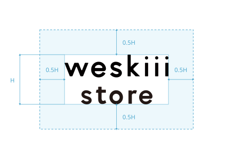
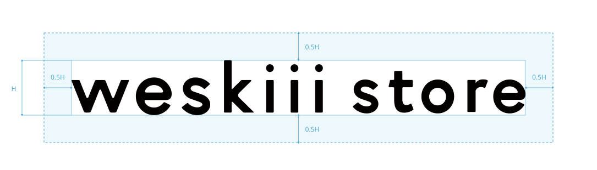
水色の線・面は説明図専用。ロゴの一部として書き出さない。HはSVGの外枠ではなく、見えているオブジェクトの上端から下端までを測る。
| 項目 | 規定 |
|---|---|
| 測る位置 | 可視オブジェクトの外縁を基準にする。透明な余白、アートボード、選択ハンドルは含めない。 |
| 必要な余白 | 上・下・左・右に0.5H以上。例：可視高さH＝40pxなら、四方に20px以上。印刷でH＝10mmなら四方に5mm以上。 |
| 配置 | 基本は白地に墨色。暗い単色面には白抜き。写真上は明暗と模様が安定した余白に置き、必要な余白を確保する。 |
| 最小サイズ | 2段は幅80px / 印刷20mm、横組みは幅160px / 印刷40mmを制作時の下限にする。素材と印刷方式に応じて細部を確認する。 |
| 変えてはいけない要素 | 縦横比、文字間、2段の位置関係、字形。回転・縁取り・影・図形との合体を行わない。 |
ロゴを置いたあと、四方0.5Hの領域へ文字・罫線・写真の被写体が入っていないか確認する。
SVGの透明な余白をアイソレーションとして数えない。ロゴの実際の外縁から測り直す。
白80%を基調に、黄色で視線をそっと動かす
約80% / 背景・余白。写真を受け止める主役。
約5% / 文字・アイコン・主CTA。黒ベタの大面積は避ける。
約7% / 罫線・補助面・画像プレースホルダー。本文色には使わない。
約8%を上限の目安に、強調線・進行バー・選択中の下線へ使用。面積を満たすために塗り面を作らない。
RGBはWebの基準値。DIC・PANTONEは特色の近似候補で、同一色を保証する換算値ではありません。PANTONEのCはコート紙用。印刷時は使用紙と現物色見本で確認し、色校正で確定する。白は紙白を基本とし、透明・色付き素材への白インキは別途指定する。
写真を除くデザイン面積の目安。図形もこの配色比率に含めます。
| 組み合わせ | コントラスト比（sRGB概算） | 用途 |
|---|---|---|
| #232323 / #ffffff | 15.7 : 1 | 本文・見出し・主要な情報。 |
| #232323 / #f5eb35 | 12.6 : 1 | 特に強調したいCTAに限り、黄色の塗りと墨色文字を組み合わせる。1画面に1つまで。 |
| #232323 / #e5e5e5 | 12.5 : 1 | グレー面の情報。 |
| #686868 / #ffffff | 5.6 : 1 | 補助テキスト用の派生色。 |
| #f5eb35 / #ffffff | 1.2 : 1 | 装飾限定。黄色だけで文字・選択状態・アイコンの意味を伝えない。 |
グレーの罫線は装飾用。入力欄の境界・フォーカスは #686868 または #232323 で明確にする。状態は色に加えてラベル・線・形でも伝える。
セクション全面、写真の外周、本文パネル、見出し帯、カードを黄色で塗らない。白い背景を保ち、注目・進行・選択を示す線として使う。例外として、特に強調したいCTAは黄色の塗り＋墨色文字とし、1画面に1つまで。配色見本の色チップも対象外。 黄色い流体背景図形も例外とし、白い余白を保てる部分的な配置に限る。
白背景に墨色の文章。重要な語句だけ黄色い下線。
写真の周囲・見出し・説明・CTAを同じ黄色い面にまとめない。
こぶりな × Circe × Open Sans
和文の見出し・本文・説明。基本400、見出しと操作600〜700。配信元が提供する実ウェイトだけを使用。
英語の見出し・章名・短いラベル。丸みのある造形が、静かな親しみをつくる。
英語の長文・価格・日時・仕様。数字には tabular-nums を使い比較しやすくする。
| 役割 | Desktop / Mobile | 行高 / 字間 |
|---|---|---|
| LP hero | 56 / 32 px | 和文1.4 / +.035em、英文1.1〜1.2 / +.025em |
| Section title | 40 / 28 px | 和文1.5、英文1.2 |
| Body | 16 / 16 px | 1.85 / 和文 .035em |
| UI / navigation | 14 / 14 px | 1.5 / .02em |
| Caption | 12 / 12 px | 1.6 / .02em。重要情報をここに押し込まない。 |
4pxを最小単位に、8pxのリズムで組み立てる
| 項目 | Desktop ≥ 768px | Mobile ≤ 767px |
|---|---|---|
| 最大コンテンツ幅 | 1200px / 12カラム / gap 32px | 幅100% / 4カラム / gap 16px |
| 左右の余白 | 48px以上 | 20px以上 |
| セクション間 | 96px（大きな区切り128px） | 64px |
| 画像と本文 | 64px | 32px |
| 見出しと本文 | 24px | 20〜24px |
| 本文の長さ | 和文約30〜38字/行を目安 | 16pxを維持し、自然な折り返し |
| 角丸・線・影 | 画像0px、補助パネル8px、ボタン999px / 線1px | 同じ原則。影は原則なし。 |
For everyday
毎日の食卓に使う商品。
関連する短い情報同士は8px。
商品の特長と、使う場面を説明します。
見出しと本文は24px。文字サイズは固定したまま余白で区切る。
素材や機能を説明する領域。
次の話題を始める領域。
PCは96px、スマホは64px。上下余白を重ねて二重に加算しない。
同じ役割の余白は同じ値を使う。8pxは関連情報、24pxは見出しと本文、96pxは話題の切り替え。写真・見出し・本文の左端を揃える。
黄色の使い方・強調線の寸法・配置ルール
黄色は、注目・進行・選択に使う。
1見出しにつき1語句。語幅だけに線を引く。
進行済み部分を黄色にする。数値も添える。
選択中の項目にだけ黄色い下線を付ける。文字は墨色。
短い強調線の使用例
文章のまとまりを始める位置に使う。すべての章見出しへ機械的には付けない。
| 項目 | 規定 |
|---|---|
| 構成の基準 | 水平・垂直、共通の左端、繰り返す余白で配置を揃える。非対称の構図でも基準線を共有する。バウハウスの機能的な構成を、このブランドの情報整理へ応用する。 |
| 強調線 | 幅48〜96px、太さ4〜8px。標準64×6px。見出しとの間隔は16〜24px。印刷では幅12〜24mm、太さ1〜2mmを目安とする。 |
| 語句の下線 | 太さ0.10〜0.14em、文字との間隔0.10〜0.16em。対象語句の幅だけに引く。複数行の文章全体を塗らない。 |
| 選択状態 | 白背景＋墨色文字＋黄色の下線。操作する場合はbuttonとaria-pressed、タブならroleとaria-selectedを正しく使う。 |
| 進行表示 | 黄色の完了部分＋墨色トラック。進行率や状態を文字でも示す。飾りの下線とは同じ領域に重ねない。 |
| 禁止する装飾 | 意味のない丸、各章に反復する短い線、文字を覆う太線、斜め線、手描き風のマーカー、円と線を同じ場所に重ねる表現。 |
読む順序や選択状態を助ける場所に黄色を使う。
小さな丸や短い線を各所に足して、全項目を同じ強さにしない。
FLUID MOTION / PARALLAX
黄色い背景図形が、ごくゆっくり回転・変形しながら、スクロールに合わせて上昇する。表紙・書体・Web・メンバーシップ・写真・コーポレート思想の余白に、数章おきに現れる。図形だけを並べた一覧は設けず、実際のページ背景で使用例を見せる。
SLOW FORMS / SCROLL
スクロールすると、黄色いかたちがゆっくり上昇します。
回転は01が180秒、03が240秒で1回転。変形は約30秒周期、輪郭からの変位は約4%以内。下へ読み進めると図形が200〜240pxの範囲で上昇し、戻すと下降する。図形は3種類から1画面に最大2点。背景全体を黄色で埋めず、文字・商品・ロゴの周囲を空ける。
黄色の面使いは、この流体背景図形と強調CTAのみ例外とする。画面外・非表示タブでは停止。停止ボタン、動きを減らす設定、印刷時の静止に対応する。
<div class="ws-fluid" data-ws-fluid><div class="ws-fluid__art" aria-hidden="true"><svg class="ws-fluid__shape ws-fluid__shape--1" viewBox="0 0 291.28 257.43" aria-hidden="true"><path d="M264.01,105.34c14.58,24.4,53.29,89.19,0,127.76-47.81,34.6-144.99,30.23-202.94,0C-9.25,196.43-.84,132.64,1.67,113.64,6.57,76.41,34.78,9.01,98.19.81c70.5-9.12,139.66,60.75,165.82,104.53Z"/></svg><svg class="ws-fluid__shape ws-fluid__shape--3" viewBox="0 0 259.06 403.14" aria-hidden="true"><path d="M219.3,285.75c-25.54,50.78-61.2,94.25-114.72,111.61C61.22,411.41-2.22,400.91.06,354.07c1.62-15.57,10.2-28.97,20.23-42.46,12.57-16.61,28.66-34.07,41.51-51.6,39.95-51.84,40-99.2,41.15-161.08,1.45-27.35,3.29-54.72,19.24-76.71,26.78-36.01,81.43-24.89,107.46,9.33,17.53,21.73,25.79,49.14,28.53,77.2,5.12,60.21-12.68,122.89-38.7,176.63l-.18.37Z"/></svg></div><div class="ws-fluid__copy"><p class="label">SLOW FORMS / SCROLL</p><h4>余白に、やさしさを。</h4><p>スクロールすると、黄色いかたちがゆっくり上昇します。</p></div><button type="button" class="ws-fluid__pause" aria-pressed="false">動きを止める</button></div>/* Yellow fluid background: only this named graphic is an exception to yellow surface prohibition. */
.ws-fluid{position:relative;isolation:isolate;overflow:hidden;min-height:680px;background:#fff;display:grid;place-items:center;padding:100px 24px;box-sizing:border-box}
.ws-fluid__art{position:absolute;inset:0;z-index:0;pointer-events:none}
.ws-fluid__shape{position:absolute;width:28%;height:auto;overflow:visible;fill:#f5eb35;transform:translateY(var(--fluid-y,0px)) rotate(var(--fluid-r,0deg));will-change:transform}
.ws-fluid__shape--1{left:-7%;top:18%}.ws-fluid__shape--3{right:-9%;top:45%;width:24%}
.ws-fluid__copy{max-width:34em;text-align:center;background:#fff;padding:24px;box-sizing:border-box}
.ws-fluid__copy h4{font:500 clamp(24px,3vw,40px)/1.6 var(--ws-ja,sans-serif);letter-spacing:.04em;margin:12px 0}
.ws-fluid__copy p{font-size:12px;line-height:1.9}
.ws-fluid__pause{position:absolute;bottom:24px;right:24px;min-height:44px;background:#fff;color:#232323;border:1px solid #e5e5e5;padding:8px 16px;cursor:pointer}
.ws-fluid__pause:focus-visible{outline:2px solid #232323;outline-offset:3px}
.ws-fluid-samples{display:grid;grid-template-columns:repeat(3,1fr);gap:24px;margin:28px 0}
.ws-fluid-samples figure{margin:0;padding:24px;background:#fafafa;text-align:center}.ws-fluid-samples img{width:100%;height:140px;object-fit:contain;filter:brightness(0);opacity:.35}.ws-fluid-samples figcaption{font-size:11px;margin-top:16px}
@media(max-width:767px){.ws-fluid{min-height:560px}.ws-fluid__shape--1{width:40%;left:-20%}.ws-fluid__shape--3{width:34%;right:-17%}.ws-fluid__copy{padding:16px;max-width:80%}.ws-fluid-samples{gap:8px}.ws-fluid-samples figure{padding:12px}.ws-fluid-samples img{height:90px}}
@media(prefers-reduced-motion:reduce){.ws-fluid__shape{transform:none!important;will-change:auto}.ws-fluid__pause{display:none}}
@media print{.ws-fluid{min-height:360px;break-inside:avoid}.ws-fluid__shape{transform:none!important;will-change:auto}.ws-fluid__pause{display:none}}
/* Occasional background placement across the guideline. No layout space is added. */
.ws-fluid-context{position:relative;isolation:isolate}
.ws-fluid-context__clip{position:absolute;inset:0;z-index:0;overflow:hidden;pointer-events:none;border-radius:0}
.ws-fluid-context__clip .ws-fluid__shape{width:clamp(180px,34%,360px);top:180px}
.ws-fluid-context__clip--left .ws-fluid__shape{left:-16%}
.ws-fluid-context__clip--right .ws-fluid__shape{right:-17%;top:340px}
#top .ws-fluid-context__clip .ws-fluid__shape{top:240px;width:34%;left:-19%}
.ws-fluid-global-pause{font:inherit;font-size:10px;line-height:1.6;border:0;border-bottom:1px solid #686868;border-radius:0;padding:8px 0;margin-top:12px;color:#232323;background:transparent;text-align:left}
@media(max-width:767px){.ws-fluid-context__clip .ws-fluid__shape{width:50%;top:170px}.ws-fluid-context__clip--left .ws-fluid__shape{left:-34%}.ws-fluid-context__clip--right .ws-fluid__shape{right:-35%}#top .ws-fluid-context__clip .ws-fluid__shape{left:-30%;width:50%}.ws-fluid-global-pause{min-height:44px}}
@media(prefers-reduced-motion:reduce){.ws-fluid-global-pause{display:none}}
@media print{.ws-fluid-context__clip,.ws-fluid-global-pause{display:none}}
/* Keep artwork in a nonnegative layer; content is a separate foreground layer. */
.ws-fluid-context > :not(.ws-fluid-context__clip){position:relative;z-index:1}
.ws-fluid-context > .ws-fluid-context__clip{position:absolute;z-index:0;display:block;visibility:visible;opacity:1}
.ws-fluid > .ws-fluid__art{z-index:0}
.ws-fluid > .ws-fluid__copy,.ws-fluid > .ws-fluid__pause{z-index:1}
.ws-fluid__shape{display:block;visibility:visible;opacity:1;transform-origin:50% 50%;transform-box:fill-box}
.ws-fluid__shape path{fill:#f5eb35!important;stroke:none}
@media print{.ws-fluid-context > .ws-fluid-context__clip{display:none}}
/* Native SVG morph: sampled original contours, no external dependency. */
(() => {
document.querySelector('[data-fluid-global-pause]')?.addEventListener('click',event=>{const b=event.currentTarget;const stopped=b.getAttribute('aria-pressed')!=='true';b.setAttribute('aria-pressed',String(stopped));b.textContent=stopped?'背景の動きを再開する':'背景の動きを止める';document.dispatchEvent(new CustomEvent('ws-fluid-pause',{detail:stopped}))});
const reduced=matchMedia('(prefers-reduced-motion: reduce)');
const globalButton=document.querySelector('[data-fluid-global-pause]');
function showMotionState(){if(globalButton){globalButton.disabled=reduced.matches;globalButton.textContent=reduced.matches?'端末の設定により背景の動きを停止中':globalButton.getAttribute('aria-pressed')==='true'?'背景の動きを再開する':'背景の動きを止める'}}
showMotionState();reduced.addEventListener('change',showMotionState);
document.querySelectorAll('[data-ws-fluid]').forEach(root=>{
const shapes=[...root.querySelectorAll('.ws-fluid__shape')].map((svg,i)=>{
const path=svg.querySelector('path'), original=path.getAttribute('d'), length=path.getTotalLength();
const points=Array.from({length:96},(_,j)=>{const p=path.getPointAtLength(length*j/96);return {x:p.x,y:p.y}});
const center=points.reduce((a,p)=>({x:a.x+p.x/96,y:a.y+p.y/96}),{x:0,y:0});
return {svg,path,original,points,center,i};
});
let visible=false,paused=false,raf=0,last=0,elapsed=Number(root.dataset.fluidOffset||0);
const button=root.querySelector('.ws-fluid__pause');
function frame(now){
raf=0;if(!visible||paused||reduced.matches||document.hidden){last=0;return}
if(last)elapsed+=Math.min(now-last,64);last=now;
const rect=root.getBoundingClientRect();
shapes.forEach(({svg,path,points,center,i})=>{
// Use the shape anchor, not the height of a potentially very long chapter.
const anchor=rect.top+svg.offsetTop;
const progress=Math.max(0,Math.min(1,(innerHeight-anchor)/(innerHeight+svg.getBoundingClientRect().height)));
svg.style.setProperty('--fluid-y',`${(0.5-progress)*(i?240:200)}px`);
svg.style.setProperty('--fluid-r',`${elapsed/(i?240000:180000)*360*(i?-1:1)}deg`);
const phase=elapsed/30000*Math.PI*2+progress*1.2+i;
const q=points.map((p,j)=>{const angle=j/points.length*Math.PI*2;const scale=1+.025*Math.sin(angle*3+phase)+.012*Math.sin(angle*2-phase*.7);return {x:center.x+(p.x-center.x)*scale,y:center.y+(p.y-center.y)*scale}});
const mid=(a,b)=>`${((a.x+b.x)/2).toFixed(2)},${((a.y+b.y)/2).toFixed(2)}`;
let d=`M${mid(q[q.length-1],q[0])}`;
q.forEach((p,j)=>{d+=`Q${p.x.toFixed(2)},${p.y.toFixed(2)} ${mid(p,q[(j+1)%q.length])}`});
path.setAttribute('d',d+'Z');
});raf=requestAnimationFrame(frame);
}
function sync(){cancelAnimationFrame(raf);raf=0;last=0;
if(reduced.matches)shapes.forEach(s=>{s.path.setAttribute('d',s.original);s.svg.style.removeProperty('--fluid-y');s.svg.style.removeProperty('--fluid-r')});
if(visible&&!paused&&!reduced.matches&&!document.hidden)raf=requestAnimationFrame(frame);
}
new IntersectionObserver(entries=>{visible=entries[0].isIntersecting;sync()}).observe(root);
button?.addEventListener('click',()=>{paused=!paused;button.setAttribute('aria-pressed',String(paused));button.textContent=paused?'動きを再開する':'動きを止める';sync()});
document.addEventListener('ws-fluid-pause',event=>{paused=event.detail;sync()});
reduced.addEventListener('change',sync);document.addEventListener('visibilitychange',sync);
window.addEventListener('beforeprint',()=>{cancelAnimationFrame(raf);last=0});window.addEventListener('afterprint',sync);
});
})();
LPの構造と、コピーして使えるWebパーツ
1セクション、1メッセージ。
読み進める理由を、順番につくる。
最初の画面では、誰のどの場面を助けるかを一言で示す。主要CTAは1種類に絞り、ページ内で同じラベルを繰り返す。価格・条件はCTAの近くに置く。以下は構成見本であり、文言・価格はサンプルです。
高さ80 / 64px。LPではリンクを3件程度に絞る。ロゴにはホームへのリンクと代替テキストを付ける。
<header class="ws-header"><a href="/"><img src="logo.svg" width="96" alt="weskiii store"></a><nav aria-label="メイン"><a href="#story">Story</a> / <a href="#items">Items</a></nav></header>
.ws-header { display:flex; align-items:center; justify-content:space-between; min-height:80px; border-bottom:1px solid var(--ws-line); }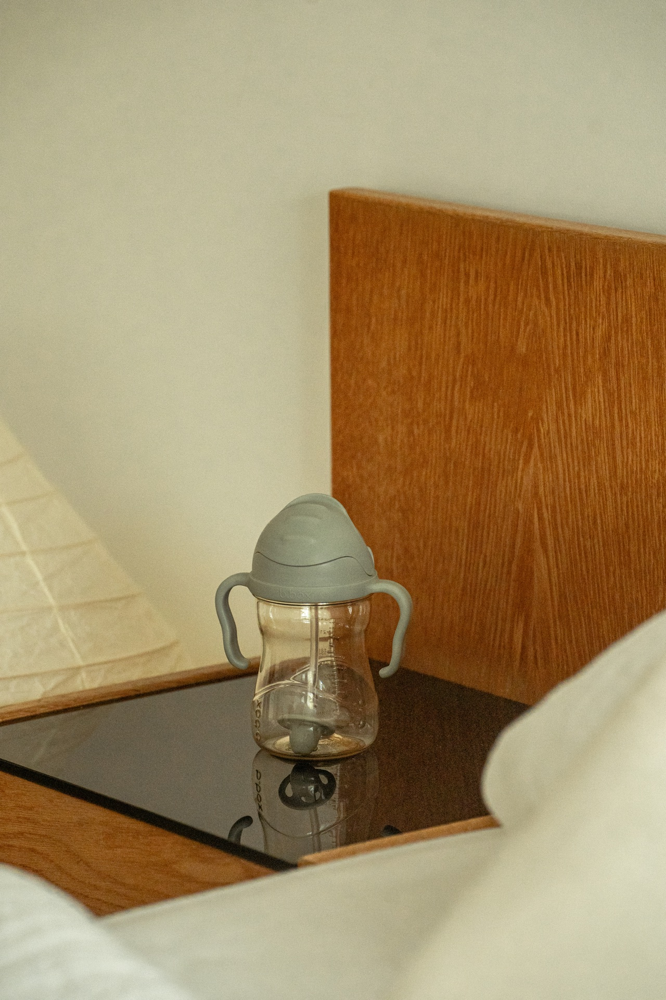
PCは1:1の2列、スマホは見出し→本文→CTA→写真。h1はページに1つ。写真は固有の被写体位置を確認してトリミング。
<section class="ws-section ws-hero"><div><p class="ws-eyebrow">FOR EVERY LITTLE MOMENT</p><h1 class="ws-title" lang="ja">いつもの時間に、小さな「できた」を。</h1><p class="ws-copy" lang="ja">毎日の食卓になじむ商品を選びました。</p><a class="ws-button" href="#items">商品を見る</a></div><img class="ws-hero__image ws-focal-image" src="photos-cup-and-texture.jpg" width="600" height="750" alt="木と布に囲まれたハンドル付きカップ" fetchpriority="high" style="object-fit:cover;object-position:50% 78%;"></section>
.ws-hero { display:grid; grid-template-columns:1fr 1fr; gap:64px; align-items:center; }
.ws-hero__image { width:100%; aspect-ratio:4/5; object-fit:cover; }
@media(max-width:767px){.ws-hero{grid-template-columns:1fr;gap:32px}}暮らしの、小さな発見。
英語28〜40px、日本語12〜14px。和文が主情報の場合は和文をh2へ。英文と和文は左端を揃え、意味の重複する見出しを増やさない。
<div class="ws-heading"><div><h2 lang="en">Little discoveries.</h2><p lang="ja">暮らしの、小さな発見。</p></div></div>
.ws-heading{display:flex;justify-content:space-between;gap:24px;margin-bottom:32px;}
.ws-heading h2{font:700 clamp(28px,3vw,40px)/1.2 var(--ws-display);margin:0;}操作領域は最低44px、標準48px。主CTAは墨色背景＋白文字。補助CTAは白背景＋墨色文字。特に強調したいCTAは黄色背景＋墨色文字。1画面に1つまでとし、他の主要CTAと優先順位を競合させない。
<a class="ws-button" href="#items">商品を見る <span aria-hidden="true">→</span></a> <a class="ws-button ws-button--secondary" href="#story">詳しく読む</a> <button class="ws-button" type="button" disabled>準備中</button>
.ws-button{display:inline-flex;align-items:center;gap:24px;min-height:48px;padding:12px 28px;border:1px solid var(--ws-ink);border-radius:999px;background:var(--ws-ink);color:var(--ws-white);text-decoration:none;}
.ws-button--secondary{background:var(--ws-white);color:var(--ws-ink);}
.ws-button:focus-visible{outline:2px solid var(--ws-ink);outline-offset:4px;}選んだ背景を、暮らしの場面と一緒に届ける。
機能の羅列より、使う人の視点を。
画像4:3、本文最大38em。交互配置はPCだけ。スマホの読み順はDOMで意味が通るように揃える。
<section id="story" class="ws-split"><img src="photos-cup-and-texture.jpg" width="600" height="450" alt="木のテーブルに置いたカップ" loading="lazy" style="object-fit:cover;object-position:50% 78%;" class="ws-focal-image"><div><p class="ws-eyebrow">WE SHARE STORIES</p><h2 class="ws-title" lang="ja">手に取る理由が、ちゃんとある。</h2><p class="ws-copy" lang="ja">ここに選んだ理由と確認済みの特長を記載。</p></div></section>
.ws-split{display:grid;grid-template-columns:1fr 1fr;gap:64px;align-items:center;}
.ws-split img{width:100%;aspect-ratio:4/3;object-fit:cover;}
@media(max-width:767px){.ws-split{grid-template-columns:1fr;gap:32px;}}b.box / SAMPLE
暮らしに寄り添う、毎日の商品。
¥2,640 （税込・参考）
ブランド → 商品名 → 特長 → 価格の順。情報を揃えて、比較を助ける。
PC3列、スマホ2列。商品写真1:1、商品名18px、価格16px。カード全体リンクにする場合は内側に別のボタンを重ねない。
<article class="ws-card"><div class="ws-card__media"><img src="photos-cup-and-texture.jpg" width="600" height="600" loading="lazy" alt="シッピーカップ"></div><div class="ws-card__body"><p>b.box</p><h3><a href="https://weskiii.com/">sippy cup</a></h3><p class="ws-price">¥2,640（税込・参考）</p></div></article>
.ws-grid{display:grid;grid-template-columns:repeat(3,minmax(0,1fr));gap:32px;}
.ws-card__media{aspect-ratio:1;background:var(--ws-gray);overflow:hidden;}
.ws-card__media img{width:100%;height:100%;object-fit:contain;}
.ws-price{font-family:var(--ws-body);font-variant-numeric:tabular-nums;}
@media(max-width:767px){.ws-grid{grid-template-columns:repeat(2,minmax(0,1fr));gap:24px 16px;}}タグは非操作の分類ラベル。絞り込みとして使う場合はbuttonとaria-pressedを使い、44px以上の操作領域を確保。
<span class="ws-tag">New</span> <span class="ws-tag">For Baby</span>
.ws-tag{display:inline-flex;align-items:center;gap:8px;border:1px solid var(--ws-line);border-radius:999px;padding:4px 12px;font-size:12px;}
.ws-dot{width:8px;height:8px;background:var(--ws-yellow);border-radius:50%;}購入前の疑問を3〜5件に絞り、回答は先に結論を書きます。これはUIの見本です。
商品ごとの確認済み情報と、最新の公式案内へのリンクを記載します。
ネイティブdetailsでキーボード操作を維持。summaryの操作領域を44px以上に。回答に販売条件を記載する場合は公式情報を確認。
<div class="ws-faq"><details><summary>購入前の質問を記載</summary><p lang="ja">確認済みの回答を簡潔に記載します。</p></details></div>
.ws-faq{border-top:1px solid var(--ws-line);}
.ws-faq details{border-bottom:1px solid var(--ws-line);padding:20px 0;}
.ws-faq summary{cursor:pointer;font-weight:600;}placeholderをラベル代わりにしない。エラーは文字で理由と修正方法を示し、aria-invalid / aria-describedbyで関連づける。
<div class="ws-field"><label for="email">メールアドレス</label><input id="email" name="email" type="email" autocomplete="email" aria-describedby="email-help"><small id="email-help">確認メールをお送りします。</small></div>
.ws-field{display:grid;gap:8px;max-width:480px;}
.ws-field input{min-height:48px;border:1px solid var(--ws-muted);border-radius:4px;padding:12px 16px;font:inherit;background:var(--ws-white);color:var(--ws-ink);}FIND YOUR EVERYDAY
背景は白を基本に、上の罫線で締める。新しい訴求を増やさず、本文で伝えた価値と同じCTAへ。
<section class="ws-cta"><h2 lang="ja">あなたの日常に、合うものを。</h2><a class="ws-button" href="https://weskiii.com/">ストアを見る</a></section>
.ws-cta{border-top:1px solid var(--ws-line);padding-block:64px;display:flex;align-items:center;justify-content:space-between;gap:32px;}
@media(max-width:767px){.ws-cta{flex-direction:column;align-items:flex-start;}}A little discovery
iはヒント、!は発見。5秒ごとに回転しながら切り替わります。ボタンでも再生できます。
初回表示時に1回、その後は5秒ごとに i ↔ ! を切り替える。各回の回転・拡大は640ms。円・背景・外周線は付けない。
<div class="ws-attention-group"><button class="ws-attention" data-ws-attention type="button" aria-label="iと感嘆符のアテンションを再生" aria-describedby="attention-description"><span class="ws-attention__glyph" aria-hidden="true">i</span></button><div><p class="micro">A little discovery</p><h3 style="font-size:25px;font-weight:500;margin:8px 0">ヒントと発見のアテンション</h3><p id="attention-description" style="font-size:13px">iはヒント、!は発見。5秒ごとに回転しながら切り替わります。ボタンでも再生できます。</p><button class="attention-pause" type="button" data-ws-attention-pause aria-pressed="false">自動再生を停止</button></div></div>
/* weskiii interaction system v1.3 — tokens: weskiii-system.css */
.ws-emphasis{position:relative;display:inline;padding-bottom:.16em;background:linear-gradient(var(--ws-yellow,#f5eb35),var(--ws-yellow,#f5eb35)) 0 100%/100% .12em no-repeat;box-decoration-break:clone;-webkit-box-decoration-break:clone;}
.ws-accent-rule{display:block;width:64px;height:6px;background:var(--ws-yellow,#f5eb35);border:0;margin:24px 0;}
.ws-attention-group{display:flex;align-items:center;gap:24px;padding:28px 0;}
.ws-attention{width:64px;height:64px;min-width:48px;flex:none;border:0;border-radius:0;background:transparent;color:var(--ws-ink,#232323);display:grid;place-items:center;padding:0;cursor:pointer;}
.ws-attention__glyph{display:block;font:700 42px/1 var(--ws-display,circe,sans-serif);transform-origin:50% 55%;}
.ws-attention.is-playing .ws-attention__glyph{animation:ws-pop-turn 640ms cubic-bezier(.22,.68,.26,1) both;}
.ws-attention:focus-visible{outline:none;}
.ws-attention:focus-visible .ws-attention__glyph{text-decoration:underline;text-underline-offset:.2em;text-decoration-thickness:2px;}
@keyframes ws-pop-turn{0%{transform:translateY(12px) rotate(-40deg) scale(.65)}65%{transform:translateY(-4px) rotate(375deg) scale(1.1)}100%{transform:translateY(0) rotate(360deg) scale(1)}}
/* Card: image and its copy share a proportional composition, details stay in flow. */
.ws-story-card{max-width:560px;margin-inline:auto;container-type:inline-size;color:var(--ws-ink,#232323);}
.ws-story-card__media{position:relative;aspect-ratio:4/5;overflow:hidden;background:var(--ws-gray,#e5e5e5);}
.ws-story-card__media>img{display:block;width:100%;height:100%;object-fit:cover;object-position:50% 55%;}
.ws-story-card__copy{position:absolute;top:6%;left:6%;right:6%;color:#fff;padding:3%;background:rgb(35 35 35 / .68);}
.ws-story-card__copy h3{margin:0 0 2cqw;font:700 clamp(20px,6cqw,36px)/1.15 var(--ws-display,circe,sans-serif);letter-spacing:.025em;color:#fff;}
.ws-story-card__copy p{margin:0;font:600 clamp(13px,3.2cqw,19px)/1.7 var(--ws-ja,sans-serif);letter-spacing:.04em;color:#fff;}
.ws-story-card__toggle{position:absolute;right:0;bottom:0;width:48px;height:48px;border:0;border-radius:0;background:#fff;color:var(--ws-ink,#232323);display:grid;place-items:center;padding:0;cursor:pointer;}
.ws-story-card__toggle span{font:300 32px/1 var(--ws-body,sans-serif);transition:transform 180ms;}
.ws-story-card__toggle[aria-expanded=true] span{transform:rotate(45deg);}
.ws-story-card__toggle:focus-visible{outline:2px solid #232323;outline-offset:-5px;}
.ws-story-card__info{text-align:center;padding:20px 16px 24px;}
.ws-story-card__brand{font:700 17px/1.5 var(--ws-display,circe,sans-serif);letter-spacing:.06em;margin:0 0 16px;}
.ws-story-card__name{font:400 17px/1.6 var(--ws-body,sans-serif);letter-spacing:.04em;margin:0 0 16px;}
.ws-story-card__price{font:400 17px/1.5 var(--ws-body,sans-serif);font-variant-numeric:tabular-nums;margin:0;}
.ws-story-card__details{padding:20px 24px;border-top:1px solid var(--ws-gray,#e5e5e5);font-size:14px;line-height:1.8;}
.ws-story-card__details[hidden]{display:none;}
/* Progress: yellow indicates the elapsed / completed part. Never fake loading data. */
.ws-progress{display:block;appearance:none;-webkit-appearance:none;width:100%;height:6px;border:0;border-radius:0;background:var(--ws-ink,#232323);color:var(--ws-yellow,#f5eb35);overflow:hidden;}
.ws-progress::-webkit-progress-bar{background:var(--ws-ink,#232323);}
.ws-progress::-webkit-progress-value{background:var(--ws-yellow,#f5eb35);}
.ws-progress::-moz-progress-bar{background:var(--ws-yellow,#f5eb35);}
.ws-progress-label{display:flex;justify-content:space-between;gap:16px;margin-bottom:12px;font:400 13px/1.5 var(--ws-body,sans-serif);}
.ws-progress-controls{display:flex;gap:12px;flex-wrap:wrap;align-items:center;margin-top:20px;}
.ws-progress-controls input{accent-color:var(--ws-ink,#232323);min-height:44px;max-width:160px;}
.ws-reading-progress{position:fixed;z-index:50;inset:0 0 auto;width:100%;height:5px;border:0;background:#232323;}
.ws-reading-progress::-webkit-progress-bar{background:#232323;}
.ws-reading-progress::-webkit-progress-value{background:#f5eb35;}
.ws-reading-progress::-moz-progress-bar{background:#f5eb35;}
@media(max-width:767px){.ws-attention{width:52px;height:52px}.ws-attention__glyph{font-size:34px}.ws-story-card__copy p{font-size:clamp(12px,3.2cqw,18px)}}
@media(prefers-reduced-motion:reduce){.ws-attention.is-playing .ws-attention__glyph{animation:none}.ws-story-card__toggle span{transition:none}}
@media print{.ws-reading-progress,.ws-attention{display:none}.ws-story-card__details[hidden]{display:block}}
/* Add once, after markup. No framework dependencies. */
(() => {
const reduce = window.matchMedia('(prefers-reduced-motion: reduce)');
const states = new Map();
const intervalMs = 5000;
function stopMotion(button,state){
clearTimeout(state.swap);clearTimeout(state.end);state.swap=null;state.end=null;
button.classList.remove('is-playing');
}
function playAttention(button,state){
if(button.classList.contains('is-playing'))return;
const glyph=button.querySelector('.ws-attention__glyph');if(!glyph)return;
const next=glyph.textContent.trim()==='i'?'!':'i';
if(reduce.matches){glyph.textContent=next;return;}
button.classList.add('is-playing');
state.swap=setTimeout(()=>{glyph.textContent=next;},260);
state.end=setTimeout(()=>{button.classList.remove('is-playing');state.swap=null;state.end=null;},660);
}
function syncAttention(button,state){
const active=state.visible&&!state.paused&&!document.hidden&&!reduce.matches;
if(!active){clearInterval(state.interval);state.interval=null;stopMotion(button,state);return;}
if(state.interval===null)state.interval=setInterval(()=>playAttention(button,state),intervalMs);
}
document.querySelectorAll('[data-ws-attention]').forEach(button=>{
const state={visible:!('IntersectionObserver' in window),paused:false,seen:false,interval:null,swap:null,end:null};states.set(button,state);
button.addEventListener('click',()=>playAttention(button,state));
const pause=button.closest('.ws-attention-group')?.querySelector('[data-ws-attention-pause]');
if(pause)pause.addEventListener('click',()=>{state.paused=!state.paused;pause.setAttribute('aria-pressed',String(state.paused));pause.textContent=state.paused?'自動再生を再開':'自動再生を停止';syncAttention(button,state);});
if('IntersectionObserver' in window){
const observer=new IntersectionObserver(entries=>{entries.forEach(entry=>{
state.visible=entry.isIntersecting&&entry.intersectionRatio>=.7;
if(state.visible&&!state.seen&&!document.hidden){state.seen=true;playAttention(button,state);}
syncAttention(button,state);
});},{threshold:[0,.7]});observer.observe(button);
}else{state.seen=true;if(!document.hidden)playAttention(button,state);syncAttention(button,state);}
});
document.addEventListener('visibilitychange',()=>states.forEach((state,button)=>syncAttention(button,state)));
reduce.addEventListener('change',()=>states.forEach((state,button)=>syncAttention(button,state)));
document.querySelectorAll('[data-ws-card-toggle]').forEach(button => {
button.addEventListener('click', () => {
const panel = document.getElementById(button.getAttribute('aria-controls'));
if (!panel) return;
const open = button.getAttribute('aria-expanded') !== 'true';
button.setAttribute('aria-expanded', String(open)); panel.hidden = !open;
button.setAttribute('aria-label', open ? '使い方の補足を閉じる' : '使い方の補足を開く');
});
});
document.querySelectorAll('[data-ws-progress-demo]').forEach(root => {
const bar=root.querySelector('progress'), value=root.querySelector('output'), range=root.querySelector('input'), toggle=root.querySelector('[data-progress-play]');
if(!bar || !value || !range || !toggle) return;
let raf=0, running=false, start=0, elapsed=0;
const duration=6000;
function draw(percent) { const n=Math.max(0,Math.min(100,Math.round(percent))); bar.value=n; value.value=n+'%'; range.value=String(n); }
function pause() { if(running) elapsed=Math.min(duration,performance.now()-start); running=false;cancelAnimationFrame(raf);toggle.textContent=elapsed>=duration?'もう一度再生':'再生';toggle.setAttribute('aria-pressed','false'); }
function frame(now) { if(!running)return;elapsed=Math.min(duration,now-start);draw(elapsed/duration*100);if(elapsed>=duration){pause();return;}raf=requestAnimationFrame(frame); }
toggle.addEventListener('click',()=>{if(running){pause();return;}if(elapsed>=duration)elapsed=0;running=true;start=performance.now()-elapsed;toggle.textContent='一時停止';toggle.setAttribute('aria-pressed','true');raf=requestAnimationFrame(frame);});
range.addEventListener('input',()=>{pause();elapsed=Number(range.value)/100*duration;draw(Number(range.value));});
document.addEventListener('visibilitychange',()=>{if(document.hidden)pause();});
draw(Number(bar.value)); elapsed=Number(bar.value)/100*duration;
});
const reading=document.querySelector('[data-ws-reading]');
if(reading){let scheduled=false;const update=()=>{const max=document.documentElement.scrollHeight-innerHeight;reading.value=max>0?Math.max(0,Math.min(100,scrollY/max*100)):100;scheduled=false;};addEventListener('scroll',()=>{if(!scheduled){scheduled=true;requestAnimationFrame(update);}},{passive:true});addEventListener('resize',update);addEventListener('load',update);if('ResizeObserver' in window)new ResizeObserver(update).observe(document.body);update();}
})();
いつもの商品に、選ぶ理由を。
手に取る時間を、少し心地よく。
b.box
sippy cup
¥2,640 （税込・参考）
このパーツは、写真の中の使う場面と、その下の商品情報をつなげます。本文には確認済みの仕様や使い方を入れ、＋で補足を展開します。
写真は4:5。文字は左上、商品情報は中央揃え。＋は右下の48px角、展開内容は下へ流す。
| 要素 | スタイルルール |
|---|---|
| 写真と文字 | 写真の四辺6%を内側余白に。被写体と文字が重ならないカットを選ぶ。白文字が読めない場合は暗い補助面を敷くか、白い帯＋墨色へ変更。 |
| 英語見出し | Circe Bold、カード幅の約6%、最大36px / 行高1.15 / 字間+.025em。基本1行。タイトル上の点は黄色、直径はカード幅の約2.4%。 |
| 和文説明 | こぶりな600、幅の約3.2% / 行高1.7 / 字間+.04em。原則3行まで。スマホで小さくなる場合は文を短くするか写真外へ出す。 |
| 文字のコントラスト | 通常文字4.5:1以上、大きな文字3:1以上。白文字用の暗い補助面は写真が白でも読める濃度を確保。この見本は黒68%の面。 |
| ＋と展開 | 白地＋墨色。キーボードで操作可能。展開時は＋を45°回転し、aria-expandedと補足領域の表示を同期。 |
| 商品情報 | ブランド17px/700、商品名17px/400、価格17px/400。字間+.04〜.06em。ブランド→商品名→価格の間は16pxを基本とする。 |
<article class="ws-story-card"><div class="ws-story-card__media"><img src="photos-cup-and-texture.jpg" alt="木と布に囲まれたハンドル付きカップ" loading="lazy"><div class="ws-story-card__copy"><h3 lang="en">How to use</h3><p lang="ja">いつもの商品に、選ぶ理由を。<br>手に取る時間を、少し心地よく。</p></div><button class="ws-story-card__toggle" type="button" data-ws-card-toggle aria-expanded="false" aria-controls="card-more" aria-label="使い方の補足を開く"><span aria-hidden="true">+</span></button></div><div class="ws-story-card__info"><p class="ws-story-card__brand">b.box</p><p class="ws-story-card__name">sippy cup</p><p class="ws-story-card__price">¥2,640 <small>（税込・参考）</small></p></div><div class="ws-story-card__details" id="card-more" hidden><p>このパーツは、写真の中の使う場面と、その下の商品情報をつなげます。本文には確認済みの仕様や使い方を入れ、＋で補足を展開します。</p></div></article>
/* weskiii interaction system v1.3 — tokens: weskiii-system.css */
.ws-emphasis{position:relative;display:inline;padding-bottom:.16em;background:linear-gradient(var(--ws-yellow,#f5eb35),var(--ws-yellow,#f5eb35)) 0 100%/100% .12em no-repeat;box-decoration-break:clone;-webkit-box-decoration-break:clone;}
.ws-accent-rule{display:block;width:64px;height:6px;background:var(--ws-yellow,#f5eb35);border:0;margin:24px 0;}
.ws-attention-group{display:flex;align-items:center;gap:24px;padding:28px 0;}
.ws-attention{width:64px;height:64px;min-width:48px;flex:none;border:0;border-radius:0;background:transparent;color:var(--ws-ink,#232323);display:grid;place-items:center;padding:0;cursor:pointer;}
.ws-attention__glyph{display:block;font:700 42px/1 var(--ws-display,circe,sans-serif);transform-origin:50% 55%;}
.ws-attention.is-playing .ws-attention__glyph{animation:ws-pop-turn 640ms cubic-bezier(.22,.68,.26,1) both;}
.ws-attention:focus-visible{outline:none;}
.ws-attention:focus-visible .ws-attention__glyph{text-decoration:underline;text-underline-offset:.2em;text-decoration-thickness:2px;}
@keyframes ws-pop-turn{0%{transform:translateY(12px) rotate(-40deg) scale(.65)}65%{transform:translateY(-4px) rotate(375deg) scale(1.1)}100%{transform:translateY(0) rotate(360deg) scale(1)}}
/* Card: image and its copy share a proportional composition, details stay in flow. */
.ws-story-card{max-width:560px;margin-inline:auto;container-type:inline-size;color:var(--ws-ink,#232323);}
.ws-story-card__media{position:relative;aspect-ratio:4/5;overflow:hidden;background:var(--ws-gray,#e5e5e5);}
.ws-story-card__media>img{display:block;width:100%;height:100%;object-fit:cover;object-position:50% 55%;}
.ws-story-card__copy{position:absolute;top:6%;left:6%;right:6%;color:#fff;padding:3%;background:rgb(35 35 35 / .68);}
.ws-story-card__copy h3{margin:0 0 2cqw;font:700 clamp(20px,6cqw,36px)/1.15 var(--ws-display,circe,sans-serif);letter-spacing:.025em;color:#fff;}
.ws-story-card__copy p{margin:0;font:600 clamp(13px,3.2cqw,19px)/1.7 var(--ws-ja,sans-serif);letter-spacing:.04em;color:#fff;}
.ws-story-card__toggle{position:absolute;right:0;bottom:0;width:48px;height:48px;border:0;border-radius:0;background:#fff;color:var(--ws-ink,#232323);display:grid;place-items:center;padding:0;cursor:pointer;}
.ws-story-card__toggle span{font:300 32px/1 var(--ws-body,sans-serif);transition:transform 180ms;}
.ws-story-card__toggle[aria-expanded=true] span{transform:rotate(45deg);}
.ws-story-card__toggle:focus-visible{outline:2px solid #232323;outline-offset:-5px;}
.ws-story-card__info{text-align:center;padding:20px 16px 24px;}
.ws-story-card__brand{font:700 17px/1.5 var(--ws-display,circe,sans-serif);letter-spacing:.06em;margin:0 0 16px;}
.ws-story-card__name{font:400 17px/1.6 var(--ws-body,sans-serif);letter-spacing:.04em;margin:0 0 16px;}
.ws-story-card__price{font:400 17px/1.5 var(--ws-body,sans-serif);font-variant-numeric:tabular-nums;margin:0;}
.ws-story-card__details{padding:20px 24px;border-top:1px solid var(--ws-gray,#e5e5e5);font-size:14px;line-height:1.8;}
.ws-story-card__details[hidden]{display:none;}
/* Progress: yellow indicates the elapsed / completed part. Never fake loading data. */
.ws-progress{display:block;appearance:none;-webkit-appearance:none;width:100%;height:6px;border:0;border-radius:0;background:var(--ws-ink,#232323);color:var(--ws-yellow,#f5eb35);overflow:hidden;}
.ws-progress::-webkit-progress-bar{background:var(--ws-ink,#232323);}
.ws-progress::-webkit-progress-value{background:var(--ws-yellow,#f5eb35);}
.ws-progress::-moz-progress-bar{background:var(--ws-yellow,#f5eb35);}
.ws-progress-label{display:flex;justify-content:space-between;gap:16px;margin-bottom:12px;font:400 13px/1.5 var(--ws-body,sans-serif);}
.ws-progress-controls{display:flex;gap:12px;flex-wrap:wrap;align-items:center;margin-top:20px;}
.ws-progress-controls input{accent-color:var(--ws-ink,#232323);min-height:44px;max-width:160px;}
.ws-reading-progress{position:fixed;z-index:50;inset:0 0 auto;width:100%;height:5px;border:0;background:#232323;}
.ws-reading-progress::-webkit-progress-bar{background:#232323;}
.ws-reading-progress::-webkit-progress-value{background:#f5eb35;}
.ws-reading-progress::-moz-progress-bar{background:#f5eb35;}
@media(max-width:767px){.ws-attention{width:52px;height:52px}.ws-attention__glyph{font-size:34px}.ws-story-card__copy p{font-size:clamp(12px,3.2cqw,18px)}}
@media(prefers-reduced-motion:reduce){.ws-attention.is-playing .ws-attention__glyph{animation:none}.ws-story-card__toggle span{transition:none}}
@media print{.ws-reading-progress,.ws-attention{display:none}.ws-story-card__details[hidden]{display:block}}
/* Add once, after markup. No framework dependencies. */
(() => {
const reduce = window.matchMedia('(prefers-reduced-motion: reduce)');
const states = new Map();
const intervalMs = 5000;
function stopMotion(button,state){
clearTimeout(state.swap);clearTimeout(state.end);state.swap=null;state.end=null;
button.classList.remove('is-playing');
}
function playAttention(button,state){
if(button.classList.contains('is-playing'))return;
const glyph=button.querySelector('.ws-attention__glyph');if(!glyph)return;
const next=glyph.textContent.trim()==='i'?'!':'i';
if(reduce.matches){glyph.textContent=next;return;}
button.classList.add('is-playing');
state.swap=setTimeout(()=>{glyph.textContent=next;},260);
state.end=setTimeout(()=>{button.classList.remove('is-playing');state.swap=null;state.end=null;},660);
}
function syncAttention(button,state){
const active=state.visible&&!state.paused&&!document.hidden&&!reduce.matches;
if(!active){clearInterval(state.interval);state.interval=null;stopMotion(button,state);return;}
if(state.interval===null)state.interval=setInterval(()=>playAttention(button,state),intervalMs);
}
document.querySelectorAll('[data-ws-attention]').forEach(button=>{
const state={visible:!('IntersectionObserver' in window),paused:false,seen:false,interval:null,swap:null,end:null};states.set(button,state);
button.addEventListener('click',()=>playAttention(button,state));
const pause=button.closest('.ws-attention-group')?.querySelector('[data-ws-attention-pause]');
if(pause)pause.addEventListener('click',()=>{state.paused=!state.paused;pause.setAttribute('aria-pressed',String(state.paused));pause.textContent=state.paused?'自動再生を再開':'自動再生を停止';syncAttention(button,state);});
if('IntersectionObserver' in window){
const observer=new IntersectionObserver(entries=>{entries.forEach(entry=>{
state.visible=entry.isIntersecting&&entry.intersectionRatio>=.7;
if(state.visible&&!state.seen&&!document.hidden){state.seen=true;playAttention(button,state);}
syncAttention(button,state);
});},{threshold:[0,.7]});observer.observe(button);
}else{state.seen=true;if(!document.hidden)playAttention(button,state);syncAttention(button,state);}
});
document.addEventListener('visibilitychange',()=>states.forEach((state,button)=>syncAttention(button,state)));
reduce.addEventListener('change',()=>states.forEach((state,button)=>syncAttention(button,state)));
document.querySelectorAll('[data-ws-card-toggle]').forEach(button => {
button.addEventListener('click', () => {
const panel = document.getElementById(button.getAttribute('aria-controls'));
if (!panel) return;
const open = button.getAttribute('aria-expanded') !== 'true';
button.setAttribute('aria-expanded', String(open)); panel.hidden = !open;
button.setAttribute('aria-label', open ? '使い方の補足を閉じる' : '使い方の補足を開く');
});
});
document.querySelectorAll('[data-ws-progress-demo]').forEach(root => {
const bar=root.querySelector('progress'), value=root.querySelector('output'), range=root.querySelector('input'), toggle=root.querySelector('[data-progress-play]');
if(!bar || !value || !range || !toggle) return;
let raf=0, running=false, start=0, elapsed=0;
const duration=6000;
function draw(percent) { const n=Math.max(0,Math.min(100,Math.round(percent))); bar.value=n; value.value=n+'%'; range.value=String(n); }
function pause() { if(running) elapsed=Math.min(duration,performance.now()-start); running=false;cancelAnimationFrame(raf);toggle.textContent=elapsed>=duration?'もう一度再生':'再生';toggle.setAttribute('aria-pressed','false'); }
function frame(now) { if(!running)return;elapsed=Math.min(duration,now-start);draw(elapsed/duration*100);if(elapsed>=duration){pause();return;}raf=requestAnimationFrame(frame); }
toggle.addEventListener('click',()=>{if(running){pause();return;}if(elapsed>=duration)elapsed=0;running=true;start=performance.now()-elapsed;toggle.textContent='一時停止';toggle.setAttribute('aria-pressed','true');raf=requestAnimationFrame(frame);});
range.addEventListener('input',()=>{pause();elapsed=Number(range.value)/100*duration;draw(Number(range.value));});
document.addEventListener('visibilitychange',()=>{if(document.hidden)pause();});
draw(Number(bar.value)); elapsed=Number(bar.value)/100*duration;
});
const reading=document.querySelector('[data-ws-reading]');
if(reading){let scheduled=false;const update=()=>{const max=document.documentElement.scrollHeight-innerHeight;reading.value=max>0?Math.max(0,Math.min(100,scrollY/max*100)):100;scheduled=false;};addEventListener('scroll',()=>{if(!scheduled){scheduled=true;requestAnimationFrame(update);}},{passive:true});addEventListener('resize',update);addEventListener('load',update);if('ResizeObserver' in window)new ResizeObserver(update).observe(document.body);update();}
})();
進行済み・再生中は #f5eb35。トラックは墨色、太さ6px、角丸0。本文や写真に重ならない位置へ。
<div data-ws-progress-demo><div class="ws-progress-label"><label for="progress-example">表示時間の進行 / 6秒の操作見本</label><output>35%</output></div><progress class="ws-progress" id="progress-example" value="35" max="100">35%</progress><div class="ws-progress-controls"><button type="button" data-progress-play aria-pressed="false">再生</button><label for="progress-value">進行率</label><input id="progress-value" type="range" min="0" max="100" value="35"></div></div>
/* weskiii interaction system v1.3 — tokens: weskiii-system.css */
.ws-emphasis{position:relative;display:inline;padding-bottom:.16em;background:linear-gradient(var(--ws-yellow,#f5eb35),var(--ws-yellow,#f5eb35)) 0 100%/100% .12em no-repeat;box-decoration-break:clone;-webkit-box-decoration-break:clone;}
.ws-accent-rule{display:block;width:64px;height:6px;background:var(--ws-yellow,#f5eb35);border:0;margin:24px 0;}
.ws-attention-group{display:flex;align-items:center;gap:24px;padding:28px 0;}
.ws-attention{width:64px;height:64px;min-width:48px;flex:none;border:0;border-radius:0;background:transparent;color:var(--ws-ink,#232323);display:grid;place-items:center;padding:0;cursor:pointer;}
.ws-attention__glyph{display:block;font:700 42px/1 var(--ws-display,circe,sans-serif);transform-origin:50% 55%;}
.ws-attention.is-playing .ws-attention__glyph{animation:ws-pop-turn 640ms cubic-bezier(.22,.68,.26,1) both;}
.ws-attention:focus-visible{outline:none;}
.ws-attention:focus-visible .ws-attention__glyph{text-decoration:underline;text-underline-offset:.2em;text-decoration-thickness:2px;}
@keyframes ws-pop-turn{0%{transform:translateY(12px) rotate(-40deg) scale(.65)}65%{transform:translateY(-4px) rotate(375deg) scale(1.1)}100%{transform:translateY(0) rotate(360deg) scale(1)}}
/* Card: image and its copy share a proportional composition, details stay in flow. */
.ws-story-card{max-width:560px;margin-inline:auto;container-type:inline-size;color:var(--ws-ink,#232323);}
.ws-story-card__media{position:relative;aspect-ratio:4/5;overflow:hidden;background:var(--ws-gray,#e5e5e5);}
.ws-story-card__media>img{display:block;width:100%;height:100%;object-fit:cover;object-position:50% 55%;}
.ws-story-card__copy{position:absolute;top:6%;left:6%;right:6%;color:#fff;padding:3%;background:rgb(35 35 35 / .68);}
.ws-story-card__copy h3{margin:0 0 2cqw;font:700 clamp(20px,6cqw,36px)/1.15 var(--ws-display,circe,sans-serif);letter-spacing:.025em;color:#fff;}
.ws-story-card__copy p{margin:0;font:600 clamp(13px,3.2cqw,19px)/1.7 var(--ws-ja,sans-serif);letter-spacing:.04em;color:#fff;}
.ws-story-card__toggle{position:absolute;right:0;bottom:0;width:48px;height:48px;border:0;border-radius:0;background:#fff;color:var(--ws-ink,#232323);display:grid;place-items:center;padding:0;cursor:pointer;}
.ws-story-card__toggle span{font:300 32px/1 var(--ws-body,sans-serif);transition:transform 180ms;}
.ws-story-card__toggle[aria-expanded=true] span{transform:rotate(45deg);}
.ws-story-card__toggle:focus-visible{outline:2px solid #232323;outline-offset:-5px;}
.ws-story-card__info{text-align:center;padding:20px 16px 24px;}
.ws-story-card__brand{font:700 17px/1.5 var(--ws-display,circe,sans-serif);letter-spacing:.06em;margin:0 0 16px;}
.ws-story-card__name{font:400 17px/1.6 var(--ws-body,sans-serif);letter-spacing:.04em;margin:0 0 16px;}
.ws-story-card__price{font:400 17px/1.5 var(--ws-body,sans-serif);font-variant-numeric:tabular-nums;margin:0;}
.ws-story-card__details{padding:20px 24px;border-top:1px solid var(--ws-gray,#e5e5e5);font-size:14px;line-height:1.8;}
.ws-story-card__details[hidden]{display:none;}
/* Progress: yellow indicates the elapsed / completed part. Never fake loading data. */
.ws-progress{display:block;appearance:none;-webkit-appearance:none;width:100%;height:6px;border:0;border-radius:0;background:var(--ws-ink,#232323);color:var(--ws-yellow,#f5eb35);overflow:hidden;}
.ws-progress::-webkit-progress-bar{background:var(--ws-ink,#232323);}
.ws-progress::-webkit-progress-value{background:var(--ws-yellow,#f5eb35);}
.ws-progress::-moz-progress-bar{background:var(--ws-yellow,#f5eb35);}
.ws-progress-label{display:flex;justify-content:space-between;gap:16px;margin-bottom:12px;font:400 13px/1.5 var(--ws-body,sans-serif);}
.ws-progress-controls{display:flex;gap:12px;flex-wrap:wrap;align-items:center;margin-top:20px;}
.ws-progress-controls input{accent-color:var(--ws-ink,#232323);min-height:44px;max-width:160px;}
.ws-reading-progress{position:fixed;z-index:50;inset:0 0 auto;width:100%;height:5px;border:0;background:#232323;}
.ws-reading-progress::-webkit-progress-bar{background:#232323;}
.ws-reading-progress::-webkit-progress-value{background:#f5eb35;}
.ws-reading-progress::-moz-progress-bar{background:#f5eb35;}
@media(max-width:767px){.ws-attention{width:52px;height:52px}.ws-attention__glyph{font-size:34px}.ws-story-card__copy p{font-size:clamp(12px,3.2cqw,18px)}}
@media(prefers-reduced-motion:reduce){.ws-attention.is-playing .ws-attention__glyph{animation:none}.ws-story-card__toggle span{transition:none}}
@media print{.ws-reading-progress,.ws-attention{display:none}.ws-story-card__details[hidden]{display:block}}
/* Add once, after markup. No framework dependencies. */
(() => {
const reduce = window.matchMedia('(prefers-reduced-motion: reduce)');
const states = new Map();
const intervalMs = 5000;
function stopMotion(button,state){
clearTimeout(state.swap);clearTimeout(state.end);state.swap=null;state.end=null;
button.classList.remove('is-playing');
}
function playAttention(button,state){
if(button.classList.contains('is-playing'))return;
const glyph=button.querySelector('.ws-attention__glyph');if(!glyph)return;
const next=glyph.textContent.trim()==='i'?'!':'i';
if(reduce.matches){glyph.textContent=next;return;}
button.classList.add('is-playing');
state.swap=setTimeout(()=>{glyph.textContent=next;},260);
state.end=setTimeout(()=>{button.classList.remove('is-playing');state.swap=null;state.end=null;},660);
}
function syncAttention(button,state){
const active=state.visible&&!state.paused&&!document.hidden&&!reduce.matches;
if(!active){clearInterval(state.interval);state.interval=null;stopMotion(button,state);return;}
if(state.interval===null)state.interval=setInterval(()=>playAttention(button,state),intervalMs);
}
document.querySelectorAll('[data-ws-attention]').forEach(button=>{
const state={visible:!('IntersectionObserver' in window),paused:false,seen:false,interval:null,swap:null,end:null};states.set(button,state);
button.addEventListener('click',()=>playAttention(button,state));
const pause=button.closest('.ws-attention-group')?.querySelector('[data-ws-attention-pause]');
if(pause)pause.addEventListener('click',()=>{state.paused=!state.paused;pause.setAttribute('aria-pressed',String(state.paused));pause.textContent=state.paused?'自動再生を再開':'自動再生を停止';syncAttention(button,state);});
if('IntersectionObserver' in window){
const observer=new IntersectionObserver(entries=>{entries.forEach(entry=>{
state.visible=entry.isIntersecting&&entry.intersectionRatio>=.7;
if(state.visible&&!state.seen&&!document.hidden){state.seen=true;playAttention(button,state);}
syncAttention(button,state);
});},{threshold:[0,.7]});observer.observe(button);
}else{state.seen=true;if(!document.hidden)playAttention(button,state);syncAttention(button,state);}
});
document.addEventListener('visibilitychange',()=>states.forEach((state,button)=>syncAttention(button,state)));
reduce.addEventListener('change',()=>states.forEach((state,button)=>syncAttention(button,state)));
document.querySelectorAll('[data-ws-card-toggle]').forEach(button => {
button.addEventListener('click', () => {
const panel = document.getElementById(button.getAttribute('aria-controls'));
if (!panel) return;
const open = button.getAttribute('aria-expanded') !== 'true';
button.setAttribute('aria-expanded', String(open)); panel.hidden = !open;
button.setAttribute('aria-label', open ? '使い方の補足を閉じる' : '使い方の補足を開く');
});
});
document.querySelectorAll('[data-ws-progress-demo]').forEach(root => {
const bar=root.querySelector('progress'), value=root.querySelector('output'), range=root.querySelector('input'), toggle=root.querySelector('[data-progress-play]');
if(!bar || !value || !range || !toggle) return;
let raf=0, running=false, start=0, elapsed=0;
const duration=6000;
function draw(percent) { const n=Math.max(0,Math.min(100,Math.round(percent))); bar.value=n; value.value=n+'%'; range.value=String(n); }
function pause() { if(running) elapsed=Math.min(duration,performance.now()-start); running=false;cancelAnimationFrame(raf);toggle.textContent=elapsed>=duration?'もう一度再生':'再生';toggle.setAttribute('aria-pressed','false'); }
function frame(now) { if(!running)return;elapsed=Math.min(duration,now-start);draw(elapsed/duration*100);if(elapsed>=duration){pause();return;}raf=requestAnimationFrame(frame); }
toggle.addEventListener('click',()=>{if(running){pause();return;}if(elapsed>=duration)elapsed=0;running=true;start=performance.now()-elapsed;toggle.textContent='一時停止';toggle.setAttribute('aria-pressed','true');raf=requestAnimationFrame(frame);});
range.addEventListener('input',()=>{pause();elapsed=Number(range.value)/100*duration;draw(Number(range.value));});
document.addEventListener('visibilitychange',()=>{if(document.hidden)pause();});
draw(Number(bar.value)); elapsed=Number(bar.value)/100*duration;
});
const reading=document.querySelector('[data-ws-reading]');
if(reading){let scheduled=false;const update=()=>{const max=document.documentElement.scrollHeight-innerHeight;reading.value=max>0?Math.max(0,Math.min(100,scrollY/max*100)):100;scheduled=false;};addEventListener('scroll',()=>{if(!scheduled){scheduled=true;requestAnimationFrame(update);}},{passive:true});addEventListener('resize',update);addEventListener('load',update);if('ResizeObserver' in window)new ResizeObserver(update).observe(document.body);update();}
})();
WEB / Animation library
GSAPのテキスト表現を、白い余白・Circe・こぶりな・短い動きに合わせる。見出しを読むきっかけとして使い、本文・価格・利用条件は静止させる。黄色は強調線・進行・選択だけに使う。
商品のある暮らしを、 少し心地よく。
<article class="ws-motion-card" data-ws-motion="lines"><div class="ws-motion-card__head"><h4>01 / Line reveal</h4><span>SplitText / lines</span></div><div class="ws-motion-stage"><p class="ws-motion-text ws-motion-text--ja" lang="ja"><span class="ws-motion-sr-only">商品のある暮らしを、 少し心地よく。</span><span data-ws-motion-text aria-hidden="true">商品のある暮らしを、<br>少し心地よく。</span></p></div><p class="ws-motion-meta"><strong>行ごとに下から現れる</strong><br>和文の短い見出し。1行ずつマスクから16〜24px程度の移動感で現れ、読み終えたら静止。<br>0.65秒 / 行差0.10秒 / power2.out</p><div class="ws-motion-foot"><button type="button" data-ws-motion-replay>もう一度再生</button><span data-ws-motion-status>再生できます</span></div></article>
we share stories.
<article class="ws-motion-card" data-ws-motion="words"><div class="ws-motion-card__head"><h4>02 / Word reveal</h4><span>SplitText / words</span></div><div class="ws-motion-stage"><p class="ws-motion-text" lang="en"><span class="ws-motion-sr-only">we share stories.</span><span data-ws-motion-text aria-hidden="true">we share stories.</span></p></div><p class="ws-motion-meta"><strong>単語を順に、やわらかく出す</strong><br>英語の2〜5語の見出し。16pxだけ移動し、文の順序に沿って現れる。大きく跳ねさせない。<br>0.60秒 / 単語差0.09秒 / power2.out</p><div class="ws-motion-foot"><button type="button" data-ws-motion-replay>もう一度再生</button><span data-ws-motion-status>再生できます</span></div></article>
insight for everyday.
<article class="ws-motion-card" data-ws-motion="chars"><div class="ws-motion-card__head"><h4>03 / Character reveal</h4><span>SplitText / chars</span></div><div class="ws-motion-stage"><p class="ws-motion-text" lang="en"><span class="ws-motion-sr-only">insight for everyday.</span><span data-ws-motion-text aria-hidden="true">insight for everyday.</span></p></div><p class="ws-motion-meta"><strong>文字が少し回転して整列する</strong><br>短い英語コピー。回転は4°、移動は12pxまで。商品情報・価格・長文には使わない。<br>0.45秒 / 文字差0.014秒 / power2.out</p><div class="ws-motion-foot"><button type="button" data-ws-motion-replay>もう一度再生</button><span data-ws-motion-status>再生できます</span></div></article>
imagine a better day.
<article class="ws-motion-card" data-ws-motion="scramble"><div class="ws-motion-card__head"><h4>04 / Quiet scramble</h4><span>ScrambleText</span></div><div class="ws-motion-stage"><p class="ws-motion-text" lang="en"><span class="ws-motion-sr-only">imagine a better day.</span><span data-ws-motion-text aria-hidden="true">imagine a better day.</span></p></div><p class="ws-motion-meta"><strong>文字が入れ替わり、言葉になる</strong><br>読みものや特集の短い英語タイトルに限定。小文字だけで変化させ、0.8秒で元の文章へ。日本語の説明文には使わない。<br>0.80秒 / reveal delay 0.12秒 / speed 0.4</p><div class="ws-motion-foot"><button type="button" data-ws-motion-replay>もう一度再生</button><span data-ws-motion-status>再生できます</span></div></article>
we choose with care.
<article class="ws-motion-card" data-ws-motion="replace"><div class="ws-motion-card__head"><h4>05 / Text reveal</h4><span>TextPlugin</span></div><div class="ws-motion-stage"><p class="ws-motion-text" lang="en"><span class="ws-motion-sr-only">we choose with care.</span><span data-ws-motion-text aria-hidden="true">we choose with care.</span></p></div><p class="ws-motion-meta"><strong>言葉を区切りごとに表示する</strong><br>3〜4語の英語コピーを単語単位で表示。入力カーソルや点滅は付けず、最終文はそのまま残す。<br>0.80秒 / delimiter: space / ease: none</p><div class="ws-motion-foot"><button type="button" data-ws-motion-replay>もう一度再生</button><span data-ws-motion-status>再生できます</span></div></article>
1画面の主役は1か所。0.45〜0.8秒程度で現れた後は静止させる。再生は見出しの初回表示かユーザー操作に限る。
本文・価格・規約のスクランブル、長い待ち時間、強いバウンド、連続ループ、黄色い全面フラッシュは使わない。
動きを減らす設定では全文を静止表示。読み上げ用の本文は固定し、視覚用の文字だけを動かす。画面外や別タブでは停止。フォント読み込み後に分割し、行分割は幅の変更にも追従する。
GSAP 3.15.1 / SplitText・ScrambleText・TextPlugin。配布ファイルにライブラリを同梱。既存の ! / i の5秒アテンションはCSS＋標準JSで独立して動作します。
.ws を付けた親要素と ws-* クラスでスコープ化。既存Shopifyテーマにはそのまま上書きせず、専用LPセクション内で使用します。パーツCSSは共通トークンを前提とし、単独で使う場合も weskiii-system.css を読み込んでください。印刷物とPOPUPへ、同じ空気を広げる
Pop-up store / layout study
A3ポスター / 図形を端で切り、情報は左端へ。架空のイベント情報を入れず、日時・会場はプレースホルダー。
Price card / sample
［ブランド名］ / ［商品名］
¥0,000 （税込）
［確認済みの特長を1行で］A6プライスカード / 商品名・価格・機能を明確に。
世界のいい暮らしを、あなたの日常に。
weskiii.com ↗
ショップカード / 白い面を残し、署名のようにロゴを置く。
| 媒体 | 設計の目安 | 制作ルール |
|---|---|---|
| A3ポスター 297×420mm | 外余白20mm / 6カラム / gap 6mm / 見出し64〜96pt | 主情報はイベント名または日付のどちらか。白80%を基本に、黄色は8%前後。 |
| A6カード 105×148mm | 外余白8mm / 2カラム / 見出し18〜24pt / 価格28〜36pt | 商品名・税込価格は近接させる。説明は9〜11pt、最小8pt程度を目安に実寸確認。 |
| ショップカード 91×55mm | 外余白5mm / ロゴ幅20〜28mm | 表はロゴと短い言葉、裏にURL・店舗情報。QRを入れる場合は印刷会社推奨寸法と余白を守り実機読取。 |
| POPUPサイン | 来場者の移動方向を起点に、遠景 / 中景 / 手元を分ける | 遠景は名称、中景はカテゴリ、手元で価格。仮寸法だけで決めず、会場で距離別の視認確認。 |
| 共通入稿 | 塗り足し3mm / 仕上がり内側3〜5mm以上に重要情報 | RGB HEXはWeb用。CMYK値は印刷条件で変わるため固定せず、指定ICCと用紙で色校正。細線と黄色の再現を確認。 |
weskiii store メンバーシップ / 写真・チケット・単体アイコン
暮らしの写真と、白いチケットで。
会員特典をひと目で伝える。
名称は「weskiii store メンバーシップ」。特典ごとに写真と図案を対応させる。写真だけ、アイコンだけ、チケット付きのいずれでも同じ特典として認識できる形を保つ。
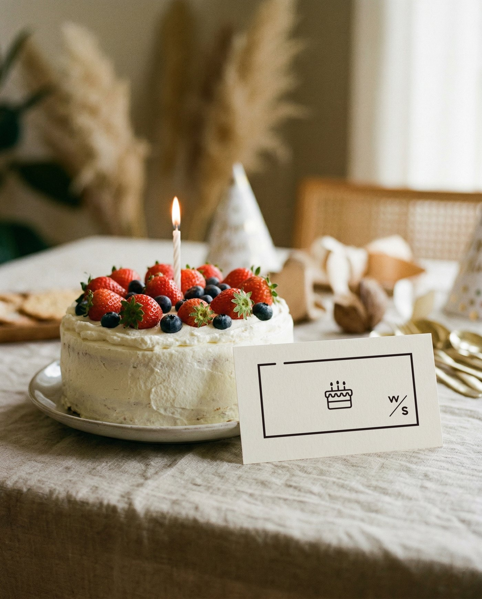
誕生日のケーキと、ケーキの図案。
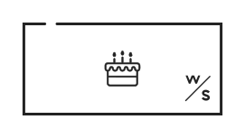
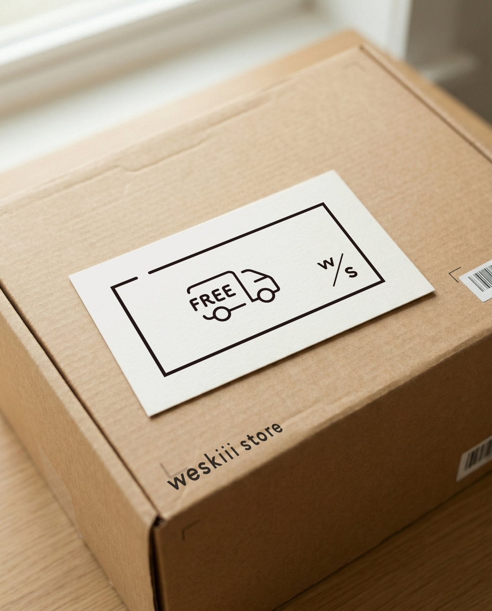
配送箱と、FREEの配送図案。
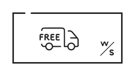
暮らしの情景と、VIPの図案。
| 項目 | 規定 |
|---|---|
| 写真 | 自然光、白〜生成りの紙、木や布の素材感。カード・ケーキ・配送箱など、特典の意味を伝える被写体を優先する。 |
| 色 | 白いカード＋墨色の図案を基本にする。黄色を使う場合は写真外の選択中の下線や短い強調線のみ。写真やチケットの背景を黄色で塗らない。 |
| チケットの構成 | 上辺に切れ目があるフレーム、中央の特典図案、右下のw/sマークを1組で使う。縦横比・線幅・切れ目の位置を変えない。 |
| 単体アイコン | 元データの形状をそのまま使う。ケーキ＝誕生日、FREE配送＝送料無料、VIP＝先行販売。単体で使用するときも近くに日本語の特典名を置く。 |
| サイズ | 単体アイコンは高さ40px以上を基本。FREEの図案は幅72px以上、VIPは幅56px以上を目安に文字を確認。チケットは幅200px以上で使う。 |
| 余白 | 単体アイコンの可視高さをAとし、四方0.25A以上を確保する。チケットは図案込みの原本SVGを使い、外側の余白を削らない。 |
| 利用条件 | 割引率・対象・有効期限・会員ランクは写真の外に文字で記載。画像の中だけに条件を入れず、実際の制度内容に合わせる。 |
配送箱＋FREE配送アイコン＋「送料無料クーポン」。媒体が変わっても同じ組み合わせを使う。
VIPだけで対象ランクや利用条件を推測させない。特典名と条件を別途記載する。
SNSの言葉遣い — 知性を、生活の言葉で伝える
よく見ている。
理由を話せる。
でも、答えを押しつけない。
手の動き、朝の支度、窓の外。読み手が想像できる場面をひとつ選ぶ。抽象的な「豊かさ」から入らず、具体から気づきへ進む。
特徴を列挙するだけでなく、それが使う人のどんな行動を助けるか説明する。難しい言葉や権威づけではなく、因果関係を明快に。
「かもしれません」「少し」「そっと」を必要な箇所に使う。断定を和らげるための連発はしない。選ぶ自由を読み手に残す。
目指すのは、経験を共有してくれる編集者の距離感。温かさを保ち、感情を大きく盛らず、具体的な説明を添える。左の軸は分析結果の点数ではなく、編集時の方向を示す提案です。
| 指定投稿からの観察 | 抽出した原則 | 運用ルール |
|---|---|---|
| Director’s Voice / Dbp_ANREdCp | 問い → 気づき → ストアの姿勢 → 記事への案内 | ブランドの話でも生活者の視点に戻す。一人称は「私たち」。 |
| Brand Story / DcI6fE1EdtN | 朝の支度 → 子どもの挑戦 → 設計の理由 → ストーリー | 機能は「誰が・何をしやすいか」へ翻訳。商品仕様は根拠確認。 |
| Every adventure / DaptyLskegu | 身近な景色 → 発見 → 小さな成長 → 価値観 | 感覚語は具体的に。ポエムだけで終わらず、暮らしへの視点を添える。 |
| 項目 | 推奨ルール |
|---|---|
| 冒頭 | 1〜2文で場面を示す。問いかけは1投稿1つまで。煽り・過剰な断定を避ける。 |
| 文体 | です・ますを基本に、情景の一節は体言止めも可。1文25〜50字を目安に、機械的には分断しない。 |
| 長さと改行 | 通常200〜450字、背景を語るJournalは450〜700字程度まで。2〜3文で1段落、意味の切れ目に空行。 |
| 語彙 | 「暮らし」「気づき」「小さな」「心地よい」「選ぶ理由」。同じ語を連発せず、行動や情景へ置き換える。 |
| 避ける表現 | 「絶対」「誰でも」「これ一択」「買わなきゃ損」、不安や罪悪感を刺激する育児表現。効果・環境価値の根拠なき断定。 |
| 記号・絵文字 | 感嘆符は原則0、必要でも1つ。絵文字は通常0、案内用途でも1つまで。区切り線・装飾記号を繰り返さない。 |
| 英語 | 短いシリーズ名や見出しに限定。意味を持つ英文だけを使い、本文の理解を英語に依存させない。 |
| CTA | 1投稿1つの行動。「詳しくはプロフィールのリンクから」など、誘導先を具体化。実際の導線と一致させる。 |
| タグ | 末尾にブランドタグ＋内容に関連するタグを少数。目安3〜5個。#weskiiiな暮らし 等の公式表記を確認。 |
| 返信・案内 | まず質問に答え、必要なら短く共感する。苦情には事実確認と対応窓口を簡潔に。個人情報はコメントで求めない。 |
出かける前に、今日の持ちものを選ぶ。
その時間も、自分でやってみる練習になるのかもしれません。
これさえあれば、子どもが絶対に自立！
ママ必見、今すぐ買うべきアイテムです！！
文体例：具体的な場面を起点に、押しつけずに伝える。
実際の投稿先リンクに合わせてCTAを調整。
写真の方向性 — 自然光と、人の気配
Natural light / Warm neutrals / Quiet gestures
自然光で、白い壁の階調、木の温かさ、肌と商品の本来の色をつなぐ。彩度を抑えても、質感と人の気配を失わない。
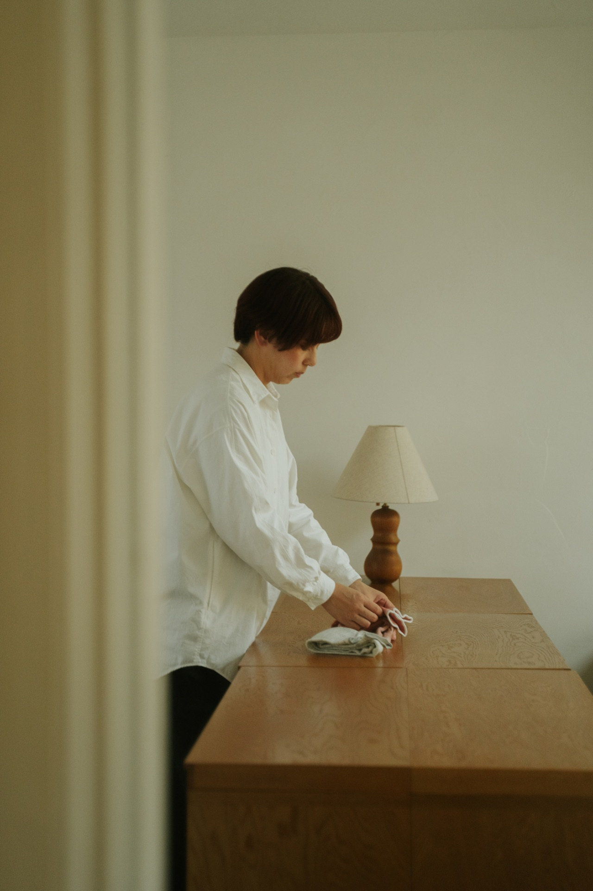
窓からの光と、大きな壁の余白。人物と手元の動作を残す。
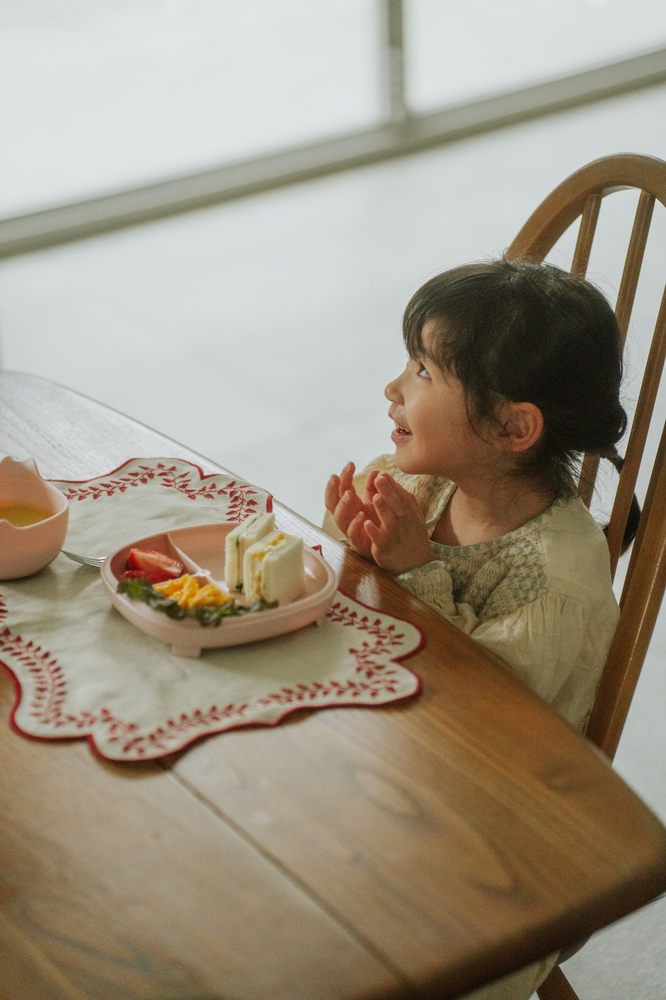
肌の柔らかさと、窓辺の白。表情と手の関係を切らない。
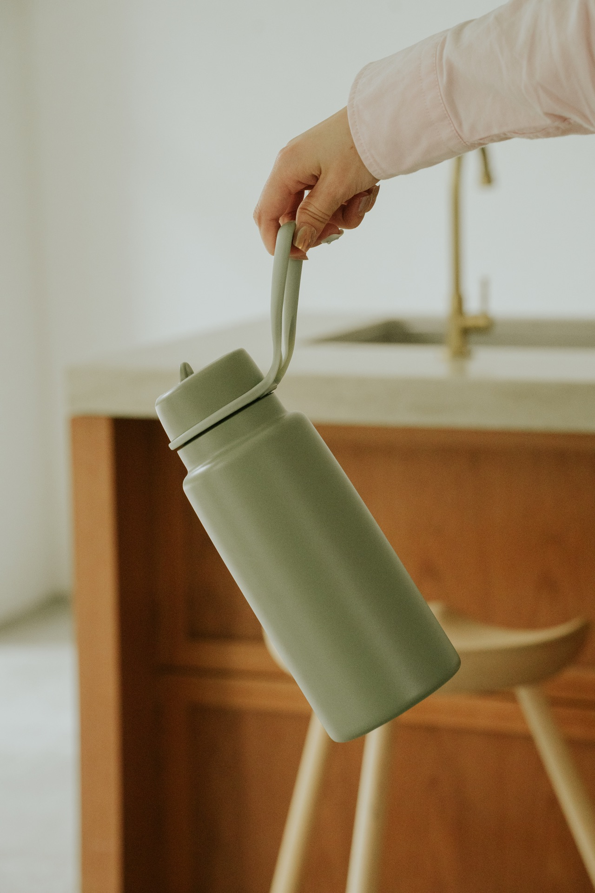
手の動き、商品の重み、木の奥行き。商品の輪郭を残す。
布・木・透明素材の階調。静物にも生活の気配を残す。
壁が大きく入り、商品の底が切れる。
4:3ではobject-position:50% 78%。ハンドル・蓋・底を見せる。
| 項目 | 規定 |
|---|---|
| 商品 / カップ | 4:3のHero・Storyは50% 78%。1:1のカードは50% 92%。商品全体と上下の空間を確認する。 |
| 商品 / ボトル | 手・ストラップ・ボトルのつながりを残す。縦長の写真は50% 60%を起点に、先端・底・手のいずれも切らない。 |
| 人物 / 食卓 | 表情・目線・手を主役にする。横長の切り抜きは50% 45%を起点にし、必要なら余白付きの元比率へ戻す。 |
| 人物 / 部屋 | 人物の顔と手元の動作を残す。横に切って関係が欠ける場合は、無理に拡大せず縦長のまま使う。 |
| 判定 | 元画像の中心位置を全写真へ一律に適用しない。画像比率が変わるたびに主役の位置を確認し、足りなければ別カットを選ぶ。 |
| 要素 | 目指す方向 | 避ける方向 |
|---|---|---|
| 光 | 窓からの側光・柔らかい逆光。白い壁に階調を残し、影を消し切らない。 | 直射フラッシュ、白飛び、商品が見えなくなる暗さ。 |
| 色 | 木のブラウン、生成り、ニュートラルな壁、穏やかな緑。白は白として残す。 | 強いオレンジ被り、過剰な彩度、黄緑の色転び。 |
| 人物 | 手元、後ろ姿、視線の先、準備中の仕草。子どもの目線に近い高さ。 | カメラ目線を強制したポーズ、演出過多の笑顔、役割を固定する家族像。 |
| 構図 | 人物や商品を画面の1/3付近へ。余白20〜35%を目安に、生活空間を残す。 | 背景を切り落としすぎるアップ、無関係な小物の詰め込み。 |
| 素材 | 無垢材、布、紙、陶器、マットな壁。商品が使われる場所を選ぶ。 | 光沢の強い人工背景、過剰なスタイリング、ブランドと無関係な高級感。 |
| レタッチ | ハイライトを抑え、暗部の情報を残す。彩度は控えめでも商品本来の色を優先。 | 一律のセピア、過度なフィルム粒子、肌の過剰修正、色が変わるプリセット。 |
| 写真とブランド色 | 白80%のルールはUI・紙面に適用。写真を白く加工したり、黄色い小物を必ず入れたりしない。 | 写真まで4色に制限する、黄色のブランド感を無理に演出する。 |
窓の近くで、出かける前の準備を撮る。人物の目線はカメラの外へ。商品を使う手と、周囲の生活空間を同時に写す。横・縦・手元の3カットを確保。商品ラベルや大切な動作がトリミングで欠けない余地を残す。
同じ場所・光で撮った写真を並べ、色温度と黒の深さを揃える。文字を置くカットには余白を確保。最初にニュートラルな白を確認し、次に肌と商品の色を合わせる。商品詳細用の正確な写真と、情景写真を使い分ける。
| SNSの運用 | 推奨ルール |
|---|---|
| フィード / カルーセル | 縦4:5（1080×1350）を基本制作比率に。プラットフォームの表示は変更されるため投稿プレビューを確認。1枚目は情景と短いタイトル、2枚目以降で理由・細部・使い方、最後に案内。 |
| 写真上の文字 | 本文を載せすぎず、和文20字前後・最大2行を目安。1080px幅でタイトル48〜64px、補足36〜40px以上を起点に実機確認。写真の明暗を見て墨色か白を選ぶ。 |
| セーフエリア | 制作上の目安として四辺80px以上。顔・商品・見出しは中央寄りに保ち、プロフィールグリッドの切り抜きも確認。投稿画面のUIと切り抜きを確認して調整。 |
| Stories / Reels | 9:16（1080×1920）で制作。上下にUIが重なるため重要情報は中央に置き、投稿画面で確認。動画はゆっくりしたカット、生活音や字幕で理解を補う。 |
| 文字と写真の可読性 | 低コントラスト写真に白文字を直置きしない。別の余白を選ぶか、白のテキスト帯へ移す。顔・手元・商品に装飾を重ねない。 |
| 投稿の連なり | 情景・細部・情報の比率を目安6:3:1で検討。固定のチェッカーボードに縛らず、単体でも意味が通る投稿に。 |
| 権利・アクセシビリティ | 撮影・掲載許諾を確認。子どもの個人情報や場所が推定できる情報に配慮。代替テキストには被写体・動作・必要な文字情報を具体的に記述。 |
Circe × こぶりな / Type on photography
Circeは視線を止める短い言葉。こぶりなは、その情景の意味を静かに補う。文字を置く場所を先に見つけ、写真の主役と文字の主役を分ける。
いつもの時間に、
小さな気づきを。
壁の余白へ配置。顔・手元・ランプから離し、文字領域にだけ薄い暗部グラデーションを敷く。写真全体を暗くしない。
<div class="ws-photo-type ws-photo-type--white"><img src="photos-everyday-room.jpg" width="1280" height="1920" alt="木のテーブルに手を添える人と、壁に広がる自然光"><div class="ws-photo-type__copy"><h3 class="ws-photo-type__en" lang="en">insight<br>for everyday.</h3><p class="ws-photo-type__ja" lang="ja">いつもの時間に、<br>小さな気づきを。</p></div></div>
手に取る理由が、
ちゃんとある。
左上の壁に寄せる。右から伸びる手とストラップを守り、商品の上に言葉を重ねない。
<div class="ws-photo-type ws-photo-type--white ws-photo-type--compact"><img src="photos-bottle-in-hand.jpg" width="1280" height="1920" alt="セージ色のボトルをストラップで持ち上げる手"><div class="ws-photo-type__copy"><h3 class="ws-photo-type__en" lang="en">in good<br>hands.</h3><p class="ws-photo-type__ja" lang="ja">手に取る理由が、<br>ちゃんとある。</p></div></div>
いつもの商品に、
使うよろこびを。
左上の淡い壁を使う。カップ・反射・布の質感は見せる。文字を木の強い模様まで広げない。
<div class="ws-photo-type ws-photo-type--white"><img src="photos-cup-and-texture.jpg" width="1280" height="1920" alt="木と布に囲まれた、両手ハンドル付きのカップ"><div class="ws-photo-type__copy"><h3 class="ws-photo-type__en" lang="en">in the<br>everyday.</h3><p class="ws-photo-type__ja" lang="ja">いつもの商品に、<br>使うよろこびを。</p></div></div>
| 項目 | 写真に載せるときのルール |
|---|---|
| 役割 | Circe Bold 700で短い英語見出し。こぶりな Regular〜Mediumで和文の意味・補足。写真上で英文と和文を同じ大きさにしない。 |
| サイズ比 | 英語を1とし、和文は0.38〜0.45。1080px幅の例は英語約84px / 和文約35px。実際の表示幅では和文14px以上を基本に、下回る場合は文字を写真外へ出す。 |
| 字間・行間 | Circeは+.015〜.04em / 行高1.1〜1.2。こぶりなは+.03〜.06em / 行高1.7〜1.85。両者の間隔は和文の約1〜1.5行分。 |
| 配置 | 四辺8%を基準に、明暗の安定した空間へ。顔・目線・手元・商品から短辺の5%以上を目安に離す。英日で左端を揃える。 |
| 文字量 | 英文2〜5語・2行まで、和文20〜36字・2〜3行までを基本。字幅を縮めたり、行間を詰めたりして収めない。 |
| 白か墨色か | 淡い壁・窓は墨色 #232323、暗い背景は白 #ffffff。背景の明暗が変化するなら位置・写真を選び直すか、局所的な補助面を使う。 |
| コントラスト | 通常文字4.5:1、大きな文字3:1を基準に、文字の背景で最も読みにくい箇所を測る。色名だけで判断しない。 |
| 補助表現 | 外側シャドウ・縁取り・多色の文字は使わない。必要な場合のみ文字領域へ限定したグラデーション、または写真外の白い余白を選ぶ。 |
| レスポンシブ | 画像ごと縮小する広告素材と、生きたテキストを持つWebパーツを分ける。スマホで読めない場合は文字を写真外へ出す。和文をcqwで無制限に縮小しない。 |
Natural-light standard / Parameters
添付の4枚を完成イメージの基準とする。木の温かさ、ニュートラルな白、落ち着いたセージ、自然な肌を共存させる。以下は新しいRAWを揃えるための初期調整幅。元写真の撮影・現像設定を示す数値ではなく、現像済みJPEGには重ねて適用しない。
| 撮影 | 数値・判断基準 |
|---|---|
| 光 | 自然光を基本に、窓からの側光・柔らかな逆光。直射は薄いカーテンで拡散し、室内灯との混色を避ける。 |
| 明るさの配分 | 背景を飛ばさず、白い布・壁に階調を残す。レフ板は影の情報を戻す程度。影を均一に消さない。 |
| 露出・被写界深度 | F2.8〜5.6を起点に、商品と動作が読める深さへ。静物1/125秒以上、人物1/250秒以上。ISO100〜1600を起点に、動作を優先して調整。 |
| ホワイトバランス | 4800〜5800Kを開始目安に、白い物と肌を見て合わせる。グレーカードで中立を確認してから温かさを微調整。ケルビン値だけで統一しない。 |
| 現像パラメーター | 開始範囲 | 狙い・止めどころ |
|---|---|---|
| 色温度 | 中立から −200〜+300K | 黄ばみを抑えながら、木と肌の自然な温度を残す。 |
| 色かぶり | 緑かぶり時 Tint +2〜+8 | 壁や白い服の緑を戻す。既に中立なら0。 |
| 露光量 | 0〜+0.35EV | 明るくしすぎない。白飛びする前に止める。 |
| コントラスト | −10〜0 | 硬さを抑える。素材の陰影と黒は残す。 |
| ハイライト / シャドウ | −25〜−10 / +5〜+15 | 窓・白い布の階調と暗部の情報を回復。HDR的に均すのは避ける。 |
| 白レベル / 黒レベル | −5〜+5 / −8〜0 | 白は淡く、黒は締める。黒を灰色へ持ち上げすぎない。 |
| テクスチャ / 明瞭度 | 0〜+8 / −8〜0 | 布・木の質感を残す。肌や輪郭を硬くしない。 |
| かすみ除去 | 0を基本 | 空気感を保ち、局所コントラストを増やしすぎない。 |
| 自然な彩度 / 彩度 | −10〜0 / −5〜0 | 落ち着かせるが、商品色と肌の色を失わない。 |
| HSL 彩度 | 黄 −15〜−5 / 緑 −15〜−5 / 橙 −5〜0 | 木がオレンジに、壁が黄色に寄りすぎる場合のみ調整。肌と商品の色を優先。 |
| 粒子 | 追加0〜5 | 撮影由来の粒子を受け止める。JPEGへの二重付加はしない。 |
| 出力 | sRGB / 長辺1600〜2400px / JPEG 80〜88% | 写真の色は画像で整える。Web上はfilter:noneを基本とし、全写真への一律フィルターを使わない。 |
調整幅はLightroom / Camera Raw系の一般的なスライダー表記。プロファイル・カメラ・元の露出で見え方が変わるため、4枚の基準写真と並べて合わせる。全項目を同時に適用するプリセットではありません。
11.1 / Format & typography
比率が変われば、
言葉の置き方も変える。
同じデザインを縮めるのではなく、文字量・改行・写真の領域を比率に合わせて組み直す。小文字始まり、開いた字間、左揃えを基本に、白い面の中で言葉を呼吸させる。
WESKIII STORE / STORIES
日常の、小さな発見。
上に短い見出し、中央に写真。下端の操作UIから文字を離す。
上下は制作上の目安14% / 18%、左右8%。見出し3行・補足1行。
英字約103px、和文約32px。上下のUIは投稿プレビューで確認。
<div class="ws-art ws-art--story"><div class="ws-art__inner"><img class="ws-art__photo" src="photos-everyday-room.jpg" alt="木のテーブルに手を添える人と、壁に広がる自然光"><div class="ws-art__copy"><p class="ws-art__eyebrow">WESKIII STORE / STORIES</p><h3 class="ws-art__title" lang="en">insight<br>for little<br>moments.</h3><p class="ws-art__sub" lang="ja">日常の、小さな発見。</p></div></div></div>
WESKIII STORE / FEED
いつもの時間を、少し心地よく。
上部の白い面にタイトル、下に生活の写真。情報と情景を分ける。
四辺8%を基準。見出し2行・和文1行・署名1行。
英字約89px、和文約32px。写真に文字を重ねず読みやすく。
<div class="ws-art ws-art--feed"><div class="ws-art__inner"><img class="ws-art__photo" src="photos-breakfast-moment.jpg" alt="朝食の前で手を合わせ、窓の方を見る子ども"><div class="ws-art__copy"><p class="ws-art__eyebrow">WESKIII STORE / FEED</p><h3 class="ws-art__title" lang="en">inspire<br>your everyday.</h3><p class="ws-art__sub" lang="ja">いつもの時間を、少し心地よく。</p></div></div></div>
WESKIII STORE / SQUARE
暮らしを見つめる、
新しい視点。
文字は左上、写真は右下。非対称でも左端と下端の基準を揃える。
四辺8%。見出し2行、補足は短く2行。写真と文字の領域を分ける。
英字約97px、和文約29px。主役を同じ中央へ集めない。
<div class="ws-art ws-art--square"><div class="ws-art__inner"><img class="ws-art__photo" src="photos-cup-and-texture.jpg" alt="木と布に囲まれた、両手ハンドル付きのカップ"><div class="ws-art__copy"><p class="ws-art__eyebrow">WESKIII STORE / SQUARE</p><h3 class="ws-art__title" lang="en">ideas for<br>everyday.</h3><p class="ws-art__sub" lang="ja">暮らしを見つめる、<br>新しい視点。</p></div></div></div>
WESKIII STORE / POSTER
日常に、小さなよろこびを。
［開催日］ / ［会場名］
上部に大きな言葉、下端に日時・会場。写真と文字の領域を分け、読み順を明確にする。
外余白は短辺の約8%。ロゴを置く場合も独立した余白を確保。
A3の英字約109pt、和文約27pt。距離と実寸で調整。
<div class="ws-art ws-art--paper"><div class="ws-art__inner"><div class="ws-art__copy"><p class="ws-art__eyebrow">WESKIII STORE / POSTER</p><h3 class="ws-art__title" lang="en">invite<br>a little<br>joy.</h3><p class="ws-art__sub" lang="ja">日常に、小さなよろこびを。</p></div><p class="ws-art__signature">［開催日］ / ［会場名］</p></div></div>
WESKIII STORE / EDITORIAL
商品と人の、
ちょうどいい関係。
左に文字、右に写真。手元・顔・商品を守り、文字のために被写体を隠さない。
左右6〜8%、上下10%。英字2行、和文2行まで。
英字約108px、和文約32px。画像と文字の間に6%程度の余白。
<div class="ws-art ws-art--landscape"><div class="ws-art__inner"><img class="ws-art__photo" src="photos-everyday-room.jpg" alt="木のテーブルに手を添える人と、壁に広がる自然光"><div class="ws-art__copy"><p class="ws-art__eyebrow">WESKIII STORE / EDITORIAL</p><h3 class="ws-art__title" lang="en">in good<br>company.</h3><p class="ws-art__sub" lang="ja">商品と人の、<br>ちょうどいい関係。</p></div></div></div>
WESKIII STORE / LP HERO
美しさと、使いやすさと、その背景。
左の白い領域に見出しと補足。右の写真は独立。横長のままスマホへ縮小しない。
左右6%、上下10〜13%。英字2行、和文1行。
英字約125px、和文約33px。スマホは4:5へ再構成。
<div class="ws-art ws-art--hero"><div class="ws-art__inner"><img class="ws-art__photo" src="photos-bottle-in-hand.jpg" alt="セージ色のボトルをストラップで持ち上げる手"><div class="ws-art__copy"><p class="ws-art__eyebrow">WESKIII STORE / LP HERO</p><h3 class="ws-art__title" lang="en">we choose<br>with care.</h3><p class="ws-art__sub" lang="ja">美しさと、使いやすさと、その背景。</p></div></div></div>
見出しを1行に限定。長いコピーや価格・期間を同時に詰め込まない。
左右6%、上下14%以上。見出し1行、補足1行。
英字約95px、和文約25px。スマホは正方形や縦長に切り替える。
<div class="ws-art ws-art--banner"><div class="ws-art__inner"><img class="ws-art__photo" src="photos-cup-and-texture.jpg" alt="木と布に囲まれた、両手ハンドル付きのカップ"><div class="ws-art__copy"><p class="ws-art__eyebrow">WESKIII STORE / BANNER</p><h3 class="ws-art__title" lang="en">ideas for everyday.</h3><p class="ws-art__sub" lang="ja">暮らしのヒントを、ひとつ。</p></div></div></div>
iの言葉は気づきへ、weの文章は選ぶ姿勢や共有する行動へ。シリーズ見出しや導入の1か所に絞り、本文は自然な生活の言葉で伝える。iは「ひとりの暮らし」と「気づく視点」を起点にする。記号の装飾より、言葉の意味を優先する。
日常の気づき。読みもの・使う場面の発見に。
insight for everyday.
見過ごしていた価値に光を当てる。背景の紹介に。
illuminate the overlooked.
選ぶ理由を語る。美しさ・使いやすさ・物語を、具体的に。
モノの背景を届ける。つくり手の意図と、使う人の暮らしをつなぐ。
| 文字組み | ルール |
|---|---|
| 英語の字間 | 大見出し +.015〜.04em、短いラベル +.08〜.12em。負の字間は基本にしない。Circe導入後は字形とサイズを見て微調整。 |
| 改行 | 意味のまとまりで切る。冠詞・前置詞を単独の行へ残さない。長い語を潰して収めず、コピーを短くする。 |
| 和文との階層 | 英語は視線を止める見出し、和文は意味を伝える。原寸で読める大きさを確保し、文字量が多い場合は英語を小さくする。 |
| 写真への直置き | 被写体から離れた、明暗の安定した余白へ。文字コントラストは本文4.5:1、大きな文字3:1。確保できなければ白い帯へ移す。 |
| 縦横の変換 | 16:9 → 4:5では文字と写真を上下へ再配置。背景だけを切り抜き、文字は別レイヤーで再配置する。 |
| ロゴと署名 | 例の小さな文字は編集用の署名。ロゴを使う場合は専用データへ置き換え、最小サイズとクリアスペースを守る。 |
チェック状態はこの画面を開いている間だけ保持。外部への投稿や送信は行いません。
コーポレート思想
we ↔︎ i
個人の感動と社会の変化を行き来する
ひとりの暮らし。
思考し、選び、日々をかたちづくる主体。
その連なり。
価値観や文化が交差し、響き合う場。
個性を保ったまま、つながり、響き合う。
世界から選び、ひとりの暮らしに届ける。その先の循環へ。
商品を選び、伝えるときは、3つの視点を重ねて考える。
使う人のどんな行動を助けるか。使いやすさ、手入れのしやすさ、日々の暮らしで役立つ理由を確かめる。
誰が、どこで、どのようにつくっているか。素材や製法、つくり手の考えを知り、商品を選ぶ理由として伝える。
かたち、色、質感が暮らしになじむか。使う場面や置いたときの姿まで見て、長くそばに置きたくなるかを考える。
CONNECTED TO THE WORLD
世界のブランドやつくり手とのつながりを伝えるグラフィック。ブランド紹介、商品の生まれた場所を紹介する特集、コーポレート思想のページで使用する。
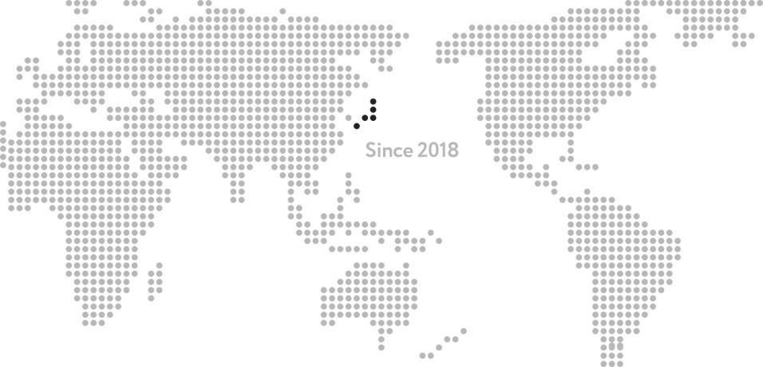
| 用途 | 使用ルール |
|---|---|
| 意味 | 世界との接点や、商品・文化を届ける文脈で使う。日常的な区切りや装飾として繰り返さない。 |
| 配置 | 横長の比率と点の配列を保ち、全体を見せる。本文やロゴを図形の上に重ねない。小さなバナーやスマートフォンでは、点が潰れる縮小を避け、別の行に説明を置く。 |
| 色と動き | 資料では白地にグレーと墨色の単色版を使う。黄色の面には使わない。地図としての向きを保つため、回転や変形は加えず静止で見せる。 |
実装用ファイルと、参照したソース
原則から、制作へ。
必要なルールを、そのまま取り出す。
/* weskiii store — design system v2.0 | 2026-11-09
Font files are not bundled. Load licensed webfonts with the provider's kit.
Map licensed Japanese font to "Koburina"; confirm provider family names.
*/
:root {
--ws-white:#ffffff; --ws-ink:#232323; --ws-yellow:#f5eb35; --ws-gray:#e5e5e5;
--ws-muted:#686868; --ws-line:#e5e5e5;
--ws-ja:"Koburina","こぶりなゴシック","Hiragino Kaku Gothic ProN","Yu Gothic",sans-serif;
--ws-display:"circe","Circe",var(--ws-ja);
--ws-body:"Open Sans",var(--ws-ja);
--ws-s1:4px; --ws-s2:8px; --ws-s3:12px; --ws-s4:16px; --ws-s6:24px;
--ws-s8:32px; --ws-s12:48px; --ws-s16:64px; --ws-s24:96px; --ws-s32:128px;
--ws-content:1200px; --ws-radius:8px; --ws-duration:180ms;
}
| 項目 | 引き継ぐこと |
|---|---|
| 書体 | 現行サイトのAdobe Fontsキットは alo2jyy（Circe Bold 700）。こぶりなの配信は未確認。font-setup.jsで既存キットを読み込み、こぶりなはfonts/へ正規Webフォントを設定する。未設定環境では和文はシステム書体で表示する。 |
| CSS | 共通CSS→プロジェクト固有CSSの順に読み込む。例：<main class="ws">…</main>。コンポーネント単位のコードはUIからコピー。 |
| 画像 | 事例は支給された4枚の写真を使用。色調は維持し、閲覧用に長辺1920pxへ縮小。画像はphotos/へ同梱し、幅・高さ・alt・用途別のトリミングを定義。 |
| アクセシビリティ | キーボード・フォーカス・200%拡大・モーション低減を確認。文字4.5:1、大きな文字3:1、必要なUI境界3:1を設計上の基準に。 |
| レスポンシブ | 幅320px〜1440pxで見出しの折返し、横スクロール、商品の比較、操作領域を確認。表とコードは必要な領域だけ横スクロール可。 |
| 印刷 | Webガイドの印刷機能は閲覧用。実際の入稿には別途DTPデータを作成し、用紙・ICC・色校正を確定する。 |
グラフィック参考：ユーザー指定のDesktop「weskiii store branding Ref」内の8点。固有のロゴ・コピー・作品は転載せず、円・強調線・罫線・余白の構造を抽出。配色はユーザー提供のスクリーンショットと指示に準拠。外部投稿の観察から導く解釈と、運用のために新規設定した数値を区別しています。